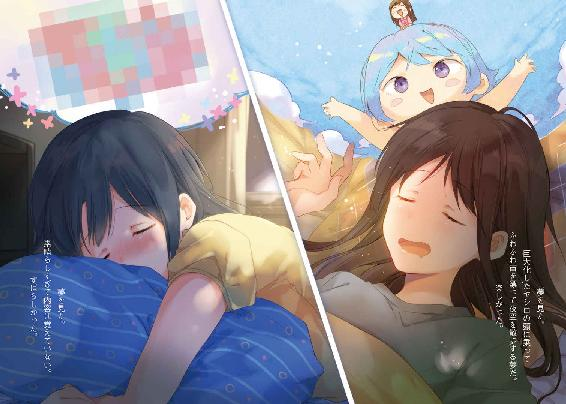

| 安達としまむら7 (電撃文庫) | |
| 入間 人間 | |
| 株式会社KADOKAWA (2016) | |

本書（電子版）に掲載されているコンテンツ（ソフトウェア／プログラム／データ／情報を含む）の著作権およびその他の権利は、すべて株式会社ＫＡＤＯＫＡＷＡおよび正当な権利を有する第三者に帰属しています。
法律の定めがある場合または権利者の明示的な承諾がある場合を除き、これらのコンテンツを複製・転載、改変・編集、翻案・翻訳、放送・出版、公衆送信（送信可能化を含む）・再配信、販売・頒布、貸与等に使用することはできません。
『もし体育館二階で出会わなかったら』
電車に乗って移動するようになってから、自分が大人になったような気がした。それは成長したとかそういう前向きな実感ではなく、そうした段階へ否応なしに運ばれていくのを感じただけだった。本人の成熟の具合なんて、誰も測らない。仕分けの基準は年齢だけ。
世間は私を大人として扱う。そしてわたしはそれに応える必要がある。
それだけだった。
電車に乗って別の県へ向かい、多くの人の流れに乗りかかるようにして地下鉄の入り口へ歩く。華やかな待ち合わせ場所である金時計を見る機会もなく、すぐに階段を降りていった。
地下へ下りると人の匂いが強まる。化粧品や整髪料の臭いが多くを占めていた。耳を塞ぐような音があちこちから飛び込んで安らぐとか安寧とか、そういうものと無縁だった。
地下鉄に乗って一駅移動して、また乗り換えのために階段を上り下り。大した移動距離でもないのに、溜息ばかりが増える。埃が固まってまとわりつくように身体が重くなっていく。
学校を出て働くようになってから、頭の端に残る疲労感は決して消えることがない。
電車の到着を待つホームで、ふと、隣の列に目が行く。
先頭から三番目に立つ女性の、気怠げな横顔を見つめる。
また見たな、という気分だった。
腰にまで届きそうな長髪は染めた名残と混ざって僅かに茶色く映る。鳶色の瞳はいつも眠そうにして重そうで、だからだろうか他の顔より印象に残る。同じく勤め人のようで、朝はよく時間がかぶっていた。歳も同じくらいに見える。そして勿論、知らない人だった。
名前も知らない、顔にも馴染みがない。一度だって声をかけたこともなかった。
むしろこれから乗る電車の中に、知り合いなんて一人もいないんじゃないかと思う。縁もゆかりもない他人同士が纏めて遠くの地へ運ばれていく。想像して、檻のない牢獄に囚われているような......そんな気がするのは、空が見えない地下にいるからだろうか。
電車がやってくる。その眠そうな顔と別の車両に乗り込む。今日は座れるかと少しばかり期待して車内を覗いてみたけど、あっという間に空席は埋まってしまった。溜息をこぼしつつ、反対側の閉じた入り口に寄り添うように立つ。傾いた頭を窓ガラスに添えて、また溜息。
一日が始まったと同時にどっと疲れが押し寄せる。みんな、そうなんだろうか。
縋るように日付を確かめると、分かりきっていたけど木曜日。今日が終わってもまだ明日がある、なんとも中途半端な日。救いのなさに、頭の傾きが増した。
電車が動き出す。
視界を埋めるような暗闇を抜けて、異界ではなく、現実に私を運んでいく。
年齢を踏まえると今のところの人生の大半は学生だったわけで、夢の中で学生の視点を持つことが多いのは自然であるように思う。今朝もそうだった。なぜか夜中の学校にみんないて、なにか、特訓か居残り補習か分からないけど勉強させられていた。勿論辛かった。
帰って寝たいなぁと思い、ふと、別に帰っていいんだと悟る。気づいたらすぐに鞄を片づけて、教室（なぜか一階にあり体育館のように広い）から出ていく。夜中の冷えた空気を吸い込みながら軽快に走っていく。誰も咎めなかった。当たり前だ、だって。
だってわたしは、もう学生じゃないから。
そこを完全に思い出したところで、丁度目覚ましが鳴る。
意識の覚醒と共に、夢に現実の認識が流れ込む。
それが少し面白く感じられた。それだけのことだった。
眠い。いくら寝ても眠気が頭から目玉の奥に残っている。でもそれ以外の箇所に疲労が残留している様子もないので、身体が休まっているのは確かだった。叩き起こした目覚ましを恨めしく見下ろしながら、のろのろと起きてぐずぐず支度する。学生の頃と違って、いざとなったらサボってしまえという甘えが通じない。夢はあくまでも夢に過ぎなかった。
学校へ出かけるところの妹にしっかりしろよなんて生意気な口を叩かれて、母親に早くしろと尻を蹴られてとそういうとこは昔から変わらない。のたのた用意して、顔を洗うと少しだけ目が覚めてきた。開いた目に映るのは、鏡の前で精彩を欠く自分の顔だった。
艶のない顔だよなーと、頰をぺたぺた触る。肌が枯れているわけではなく、けれど色艶の褪せた印象を抱く。勤め先でよく見る大人の表情で、なるほど、と目を逸らして笑った。
駅までバスに乗り、電車を乗り継いで地下鉄へ向かう。就職先を地元に求めなかったのは失敗なんじゃないかと後悔していた。なんとなくでここまでの道のりを決めてきて、今頃になってようやく誤りがぽつぽつと見えてくる。人生ってそんなものかもしれなかった。
車両の昇降口の列に並んで欠伸をかみ殺しながら待っていると、ふと振り返った先によく見る顔があった。女の子だ。働きに行く時間と、もしかしたら家の位置も近いのか顔をよく見る。真っ黒い髪を下ろしているせいか、それとも少し猫背に俯いているからか陰気な気配がヴェールのように目もとを覆う。わたしより少し背が高く、歳は同じくらいだと思う。
そのように顔は見るけど、知らない人である。
欠伸で滲んだ涙を拭ってから、前に向き直る。もうすぐ電車が来る。
早く帰りたいと思うばかりの時間と居場所に、運ばれていく。
電車がやってくる。陰気そうな顔の子と別の車両に乗り込む。席は空いていて座れそうだったけど敢えて見送った。行きの電車で座ってしまうと、目的の駅を寝過ごしかねない。座るとするなら帰りだった。帰りはもっと混んでいて、めったに座れないのだけど。
席の端にある支柱を手すりのように摑みながら、ぼうっとする。
気を抜きすぎれば、立っていても意識を手放しそうだった。
各駅に停車する電車と、その路線図を見上げながら考える。
これから、自分の人生に面白いことは起こるだろうか。
平地を歩き続けるのではなく、地面が波打つようななにかは、あるのだろうか。
いざ自分から走り出そうとしても、行く手になにもないのなら意味がない。
もし、そういうものが一つもないなら、ずっと眠っていたい。
苦痛は短くて済む方がいいに決まっていた。
つまらない人だって、よく言われる。冗談めかして或いは、乾いた声で。
異論はなかった。だって、自分でも毎日がつまらないから。魅力ある人間であるなら、目の前のものがつまらなく見えたりはしないのだろう。人に、物に限らず。
多くのものに興味を持てず、蓋でもするように閉じきった感覚を抱えて勤め先と家を往復するだけの毎日に、慣れてはいた。疲れるし億劫ではあるけれど、さして辛くはない。
思えば、そうした毎日は学校に通っていた時から続くものだったからだ。
親しい友人もなく、想うような相手もいなくて。
渇ききった喉が貼りついて上手く喋れなくなるような、そんなもどかしい感覚だ。
これからもそういうものがずっと解消されない、つまらない一日を過ごすのだろう。
そうやって覚悟さえしていれば、受け入れられる。
心の糧となるはずもない仕事を終えて、地下鉄の階段を降りる。
帰りの電車を待つときは溜息と異なり、安堵の息のようなものが漏れる。
到着する電車と、慌てて階段を駆け下りる学生の足音を聞きながら乗り込んだ。気持ち早めに足を動かして、見つけた空席へ向けて真っ直ぐ進む。空いている席を人に譲るつもりはない。
大きく息を吐くようにしながら、電車の空白を埋める。
と。
流れ込むように、隣の空席もほぼ同時に埋まる。
座る途中でそちらに目をやって、思わず動きが止まる。
朝に見かけるあの女性が丁度、隣に座ったところだった。
相手もやや前屈みの姿勢のまま、こちらを見つめている。
向こうも、私のことをよく見る顔だって気づいているみたいだった。
顔を上げる、二人揃って。少し遠慮するように身を引いたまま、見つめ合って。
電車が動き出したところで、彼女が照れ隠しのように微笑んだ。その柔和な笑みは普段の眠たげな味気ない顔と異なり、こちらの肌にむず痒さを与える。曖昧に頭を振り、前を向いた。
久しく閉じきっていた感情を、こそばゆいものがほぐそうと働きかけてくる。
なんだろう、これは。変に意識して、横目で様子を窺ってしまう。
向こうも私を見ていた。大きく、柔らかい目が不思議そうに、私を。
目が合い、じわっと頰が熱く滲むようで。また、前を向く。
身体に降り積もっていた埃が、その熱で溶けていくのを感じた。
なんでだろう。
ただ列が少し一緒になって、同じ車両に乗っただけで。
まだ声さえ聞いたことの相手なのに。
どうしてこんなに、心が躍動してしまうのか。
いつも曲がる背中も伸びて、ぴっしりと姿勢が整っていた。
お互いにどこの駅まで向かうかは分かっていた。
なにかを語り合うわけでもなく、ただ一緒に座っている。
一緒？ 一緒というのも変かな。偶然、居合わせたに過ぎない。たまたまだ。
でも、誰かと出会うっていうのはそういうものなんじゃないかって、思う。
誰かが決めたわけでもなく、決められたわけでもなく。
真っ直ぐ進んでいたはずのお互いの人生が、なぜか一瞬重なる。
自分で考えているほど、決まり切った道を歩いているわけではないのかもしれなかった。
電車が停まる。もう少しでこの時間が終わる。
だから私はその前に、彼女に興味を捧げた。
「あの......あなたの名前は？」
たとえどこかで出会う機会を損ねても。
彼女とは必ずいつか巡り会う。
私の人生を変えうるたったひとつの運命が、つまらない世界を慌ただしく塗り替えていった。
『今日の安達さん』
夢を見た。
素晴らしすぎて内容は覚えていない。覚えていないのに、素晴らしいと知っていた。
すばらしかった。
ぱちぱちぱちと、拍手もしていないのに頰を打つような音が聞こえる。カーテンを開けていない窓の向こうに、早くも光が見える。目覚めはまるで夜と朝が地続きであるように、時間の経過を感じさせない。そして、肩や頭の重さの一切も感じなかった。
普段から寝起きは悪い方ではない。でもこの澄んだ感覚は、なんだろう。
カーテンを開く。
「.............................................」
息を吞み、言葉を失う。
昇りつつある日が、屋根を、木々を、朝という時間を照らす。
光に満ちた景色の輪郭は、なにもかもが柔らかく、丸く映る。
こんなに光が強く、暖かく見えるのは、初めてだった。
心のありようで世界は変わる。いや、世界っていうのは自分の心そのものなのだ。
......みたいなことが、前に読んだ本に書いてあった気がした。
今はそれが、なんとなく分かる。
ベッドから下りても足回りがふわふわする。今なら跳ねるように飛べる気がして、その一方で歩いているように思えないほど不安定だった。床に敷いた絨毯を踏む感触が曖昧だ。
そのまま部屋の中を歩き回る。ぼんやりとなって、目的を見つけられない。なにから始めればいいのか摑めず、意識が散漫になっていた。片付かない部屋の掃除にでも振り回されるような心境で、しばらくさまよう。気を抜くと目の前が真っ白になりそうだった。
やがて部屋の中央で正座しながら、辞書を覗き込む。
「こ、こ、こ」
鶏の鳴き声みたいだった。
交際。人間同士がつきあうこと。ぺらぺらぺら。
つきあう。恋人として交際する。ぺらぺらぺら！
恋人。恋しく思う相手。普通、相思相愛の間柄にいう。
ばたん。
辞書を閉じたついでに私も倒れた。息を止めているように苦しくなる。
胸の下、鳩尾のあたりがきゅうっと引き締まる。酸欠みたいに手足が重くなって、息を吸わないといけない、そんな風に意識して口を開く。そうして吸い込んだ空気が塊のように喉を圧迫する。喉が詰まり、余計に息苦しくなってしまい、俯せになって噎せた。
一通り苦しんでから、胸を押さえて仰向けになる。夏の気温が覆い被さるように、次第次第に肌が火照る。取り分け、血でも滲むようにじわぁと、首筋が熱くなる。それが次第に鼓動を速めて、吐き気と頭痛を催す。しかしそこに溜まる嫌みなものは少なく、どこか爽やかですらあった。
たくさんの不具合が賑やかに私を盛り上げている。
立ち眩みのように意識の揺らめきを覚えて、ようやく僅かながら理性を取り戻す。
少し、落ち着こう。
なんでこんなに盛り上がっているんだ。寝汗はかいていなかったのに、いつの間にか汗だくだ。重なって熱の籠もった髪を指で梳きながら、深呼吸する。
できるだけ冷静に、ここまでを振り返ってみることにした。
今は、朝......朝だ。で、昨日は夜......なんの確認だろう。既に冷静ではない、というか平静であることは無理だった。頭を搔く。とにかく昨日、しまむらと夏祭りに出かけて......その......で、翌日。まだあの夜から十時間ぐらいしか経っていない。だけど遙か遠くの花火を見上げるように、記憶に距離を感じていた。
夢なんじゃないかと不安になるほど、細部があやふやだった。
正直、祭り会場からの帰り道のことをあまり覚えていない。しまむらから返事を貰った後がはっきりとしない。都合良い部分だけ取り分けられて記憶にあると、余計に夢っぽくなっていた。確か、しまむらに手を引いてもらって家に帰った、ような気がした。
しまむらとなにか話した気もするけど、なにを言われたのか、どう返事したのかが思い出せない。しまむらとのやり取りで記憶に残らないなんて、どうも昨晩の私は相当だったらしい。
そう、それくらいの衝撃的な展開だった。
私が、しまむらに好きだと言った。
それで、しまむらはどうしたいのと聞いてきた。
そしてなんだかんだあって、付き合おう、って話になった。
ばしばしばし、と頰を叩く。とても大人しく座っていられない。足の指が小刻みに暴れて、今にも独りでに前へ進み出しそうだった。こんな時にジッとしていられる方がおよそ正気ではない。と思う。錯乱するように目の中がぐるぐる回り続けていた。
付き合うっていうのは多分、いや間違いなく特別な関係だろう。それがなにより嬉しい。
お互い、他に換えが利かない。絶対的なもの。そういうものだ......多分。
そうだろうか？
すぐにそんな疑問が浮かぶ。なにか、漠然と不安だ。
夢幻をさまよっているかのような感覚が尚も続いている。
夏祭りの輝きに酔って、ずっとそのままみたいな気がした。
そんな夜の翌日、いつものように日は昇り、目も覚めきって。
どうする、どうする、どうする私ならどうする？
自問自答して、首が傾く。かたかたかた、と骨の震える音が首の奥から聞こえた。
問題に当たったら、一つずつ片づける。そんな当たり前を見つけるのに数分要した。
取りあえず、夢でないことをはっきりさせようと思う。
電話を手に取り、ろくに登録されていない電話帳からしまむらを見つける。
その名前を見るだけで、手汗がぎゅっと絞り出た。
緊張と高揚が同時に訪れて、せめぎ合い、肩と胃が痛い。
それが治るまで待てば、もしかしたら少しは恥をかかないで生きていられるのかもしれない。
もちろん、待っていられるはずもなかった。
電話を、繫げる。
しまむらが電話に出るのに、少し時間がかかった。
『......んもしもし......』
細い紙くずを擦れ合わせるような、弱い反応。
しまむらの声だ、と意識して背中が引きつるほど伸びた。
でも自信のなさの表れかしおしおへなへな、結局猫背になる。
「あの、え、と......おはよう」
たったそれだけ口にするのに、喉が張り裂けそうだった。
『ああ、安達かぁ......なに？』
夢現の声は続く。しまむらはいつも朝弱いけど、と時計を見上げると朝の六時になったところだった。普通の人は大体弱い時間だ。深く考えずに電話してしまった、と焦る。
ぶわぁっと、また背中が汗まみれになった。
「ごめん、その、寝てた、よね？」
『うん......んむー』
反応が鈍い。このまま無言でいたら、十数秒後には寝息を感じられそうなぐらい。
「かけ直した方が、いい？ よね？」
『あーだいじょぶ......それで、用事？』
電話の向こうのしまむらはいつもとなんら変わりないように感じる。
そして私はいつものように少し焦り、前につんのめるような調子に......あれ？
そうなると、どっちも普段と変わっていないのか。
気づくと少しだけ落ち着いた。いつものように、やや目を回しながら話せばいいのだ。
......そんなことでよく今までやってこられたものだと、他人事のように思う。
「あ、あのさ」
『うん』
昨日どう帰ったのとか私おかしくなかったとかそもそも意識あったとか聞きたいことは山積みだけど、ようするにそれがどこに繫がるかを考えて、まず一番大事なことを確認する。
電話を握りしめながら唾を吞む。もしもあれが夢の話だったら、大恥なんてものじゃない。
一生の傷になる、そんな問いだった。
大股で一歩、崖のようなそれを、飛び越えるみたいに。
「私たち、つ、つひあっ、あっている、んだよ、ね？」
途中で声が裏返った。そのまましゃっくりまで出始めて、目を白黒させる。
これはこれで一生ものの恥だった。
『えっとー......そうらしいね』
なんでちょっと他人事っぽいのしまむら。思わず足がばたばた跳ねて床を打つ。
「き、きのう、昨日」
『うん。昨日の話ね』
しまむらの言葉は軽い。ぽんぽん風船でも打ち上げるように軽い。
でも、夢じゃなかった。
昨日のすべては今日に繫がっている。
その確かな歩みと流れに感謝するように、ぺこぺこと、頭を下げた。
「よ、よろしくお願いします」
『はぁ、こちらこそ』
ばさばさと、しまむらの髪がぞんざいに上下するのが聞こえた。
なんというか......寝ぼけているから仕方ないのかもしれないけど、もっとこう、がーっとさぁ。がーっと......いやいや。なにかを求めるなら、行動あるのみだ。
「だ、だいすき、で、あの......」
気の利いた前置きもなんにも思いつかず、ただそんなことを口にする。
こういうとき、経験値というものがまったくもって低いと痛感する。
これまでの自分の結果だから、誰のせいにもできないのだけど。
『あらー、それは、どうもー』
しまむらの間延びした調子に、耳まで熱くなる。それから、会話が途切れる。
それ以上に、なにを話せばいいのか分からなかった。
いつものように。
蒸し暑さが、沈黙と共に私たちを責め立てる。
「あの、それじゃあ......」
『うん』
「あ、あの......おやすみ、なさい？」
朝にこんなこと言うのもおかしな話だった。
『おやすむ』
しまむらの口もとが電話から離れるのを感じる。
関係が変わったはずなのに、電話の応対がどちらもまったく変化ない。
こんなものなのかな、と実感を摑みかねる。
と。
離れた吐息が、耳元に戻ってくる。
『わたしも好きだよ』
「...........................
..............................
.................................」
電話が切れる。
「.....................
..............................
.............................................え」
え。
「.............................................」
雨に打たれるように、熱の粒が顔に浮かび上がる。
魂の糸がほつれたように、取り分け胸の周辺ががら空きになる。
すかすかしていた。
みちみちと詰まって苦しいのは首回りだけ。
それが段々と、全身に浸透する。
バッと跳ねた。床に肘と膝を突いて、四つん這いのような姿勢になる。意識すると顔が燃えて頭を抱えて床をのたうち回るほどの羞恥心が襲ってくるので、まともに考えることができない。得体の知れない毒を飲みこんでしまったようだった。目の上下に指を押しつけてジッと耐える。ええええ、今、えば、ばば、えばばば。
すぐ限界だった。
「あぁだば！ あーだば！ だ！ あだだっだだだだ！」
ばたばたばたばたばたと。
撃ち落とされた鳥みたいに、もがいた。
八月半ば、蟬の声も少し遠退く夏の朝。
蟬より騒々しい生き物が独り吠える。
それが、夢のように甘く霞む日々の始まりだった。
また夢かなぁと頭を抱えていた。自分に都合のいいことばかり起こっているというのは、実に不安だ。現実とはそういうものじゃないと思っていた。辛くて、優しくなくて。
でもそれは少し違ったのかもしれない。
現実は優しくないんじゃなくて、私たちに興味がないだけだ。
現実っていうのはなにか？
私たちを取り巻くものだ。
環境、空気、人間関係、地球外、宇宙の果て。
なるほど、と思う。どれもこれも、人間個人には関わり合いの薄そうなものばかりだ。
だから、現実っていうのは私たちに関心を持たない。意地悪もしないし、助けもしない。その世界で起きたことだけが全てだ。振ったサイコロが６の目を出し続けても、１が続いても、誰かがそれを見て操作することはないのだった。
いいことがいくら続いても、不安になる必要なんてないのだ。
それは逆に、どれだけ不運が連続してもなんの保証もないということだけど。
「でもぉ......」
体育座りしながら、ぐねぐねうねる。哲学的な納得なんて、目の前の小さな不安一つ取り除けない。お昼頃にもう一回電話して聞いてみようか。私のこと......す、好きって、言ったよねと。額と髪をべしべし叩く。なんで恥ずかしさというのは極まると自分に攻撃的になるのだ。
しかし私はこう、ピリッとしないというか歯切れが悪いというか、湿気った海苔というか。しまむらと話すとき、もう少しはっきりとできないものか。前はできていたはずなのに、なんでだろうと立てた膝で目を隠しながら不思議に思う。歳を経るにつれてできないことが増えていく。それは、悪い歳の取り方だって誰かが言っていた。
まぁ私は、子供の頃から取り立ててなにかできるわけではなかったけれど。
「.............................................」
溜息を吐く。
多分、しまむらに好かれたくて必死なんだなあと思った。
だから一々、言葉を選ぼうとする。前はそこまで考えていなかったから、すらすらと喋ることができた。そちらの方が、しまむらと上手く意思疎通を取れていた気さえする。
考えすぎないで喋ってみればいいんだろうか。
適当に、ぼへぼへーっと受け答え。
できるはずがない。他の人ならともかく、しまむら相手に粗雑なことは。
人付き合いというのは、本当に難しい。
期待するものがあれば尚更だ。
膝に頰をすり寄せるように頭を傾けて、ぼうっとする。大願が叶って、その寄り添う夢の大きさをまだ把握しきれていないのが分かる。実感が湧いた頃にはもっと、朝の元気な鶏みたいにそのへんを走り回るんじゃないかと思う。......なんとか、少しは落ち着けないものか。
もし昔の態度を維持できていたら、私としまむらの関係はまた変わっていたのだろうか？
今よりさらっとしているというか......淀みないというか。
そんなことも考えてしまう。
自分のことなのに、どうにもならないことが多い。
でもそれが案外、人間らしさっていうものかもしれない。
「......はぁ」
傾いていると不思議にしまむらの声が聞きたくなる。
耳を近づけて聞こえる、自分の鼓動が寂しがっているのを感じるのかもしれない。
電話しようか、と手を伸ばす。ああでも別に、電話じゃなくても会いに行けばいいのか。家に行って、しまむらと。
「......いや、うん」
会うのは、すぐには止めておこう。
今行くとどんな醜態を晒すか分かったものじゃない。幻滅されたら嫌だ。
もうちょっと時間を置いて、落ち着いて。それから改めて、会いに行こう。
それこそ夏休み明け、学校でまた顔を合わせてもいいくらいだ。
面と向かって話すための心の整理を終えるまで、少し長い時間が必要になりそうだった。
でも、声くらいはと伸びっぱなしにしていた手で電話を摑む。
また一個ずつはっきりとさせていこう。
今度は、すぐに電話が繫がった。
「あ、しまむら......」
『おはよー』
声も寝起きよりずっとしっかりして、すっかりいつものしまむらだ。
聞いた途端、さっきの最後の声を思い出して頰が痒くなる。
「うん、おはよう......起きてる？」
『何時だと思ってるの』
しまむらの笑い声が聞こえる。時計を見ると、午前十時過ぎ。
いやぁどうだろうと首を捻る。休みの日のしまむらなら、まだ寝ていてもおかしくないと思える時間だった。
『それで、どうかした？』
「えっと」
宿題やった？ という前置きのような小話は省いて、本題と向き合うことにした。
長く喋れば喋るほど、ボロが出そうなのだ。
「さっき、あの」
心臓が喉にまで迫り上がってきたように、ばくばく震える。
「す、好きだねって」
『あー、うん。前も聞いたけどありがとう』
「あ、違う、違う」
『違うの？ ちょうしょっく』
「え、ちが、違う違う違う。そうじゃなくて、しまむらが」
『わたし？』
「私のこと......好き、って、言った......よね」
しまむらが言ったはずなのに、まるで私から告白しているような形になる。
膝を抱き寄せるように身を固めて、肌を焼くような羞恥に耐えた。
『......？ そんなこと言った？』
「え......」
ま、またまたー。
そんな風におどけようかと思った。
最初は照れ隠しかと感じたからだ。でも間の取り方から、本当に覚えがないことを悟る。
「.............................................」
またまたーは、暗い穴の底に沈む。
『んー......あれ、安達......ひょっとして、怒った？』
「う、」
ごくり、と吞む。
「いや、いや......別に」
『あーこれ怒っているな。ごめん、正直に言うと覚えてない』
否定したのに見透かされる。怒っているのとはまた違うけれど、心が荒れそうになっていたのは確かだった。しまむらはそういう感情の機微を事細かに表現するのが面倒で、怒っているという感覚に落ち着いたのだろう。それが近いと判断したのだ。
パッとそういうことができるあたり、しまむらは人付き合いの経験がけっこうあるよなぁと、差を感じる。私なら悩んで、空回りして結局なにも言えないままでいるだろうと思った。
「怒っては、ほんと、ないけど」
『......ないけど？』
言葉の続きがあることもすぐに察してしまう。しまむらって、案外、私のことを理解してくれているんだなあとそんなことが嬉しくなる。ぱぁっとなる。でも光ってばかりもいられない。
「じゃあ、今、言って......ほしい」
贅沢をねだる。覚えていないなら、やり直せばいいのだ。
......やり直しの効かないこともたくさんあるけど。
まだ、取り戻せないほど時間は経っていない。
『えぇ......いやちょっと、まいったなぁ』
しまむらが頭でも動かしたように、伝わってくる声の向きが変わる。
『ちょっとというかかなり恥ずかしいじゃないの』
「が、がんばってっ」
『励まされることなのだろーか......』
わくわくして、いつの間にか正座していた。
誰かに好きと言ってもらうのは、ひょっとしたら初めてかもしれなかった。
親にだって直接言われた記憶がない。
だから刺激が強すぎて撃たれた鳥みたいになったのかもしれない。
しまむらになら何度撃ち抜かれてもいいけれど。
気を抜くと息まで荒くなりそうな焦燥を、意識してゆっくり空気を吐き出すことで抑える。
やがて、その息さえ止まる。
『好きだよ、安達』
さっきと同じ、温かみを持った声が耳を包む。
私が湯沸かし器だったら耳から湯気が噴き出ていただろう。
いや別に湯沸かし器じゃなくても湯気が出そうだった。
でも湯気が出るっていうことは実は私が湯沸かし器なのか。
わけが分からなかった。
分かるのは、今にも身体の内側が溶けていきそうなことくらいだ。
『きっと無意識に言っちゃうくらい好き好き大好き。たぶん』
「ど、どういうとこが？」
『えっ』
「どんなとこが、好き？」
参考にさせて貰いたいので尋ねてみる。すると、しまむらが言葉に詰まるのを感じた。
『んー......そういうことを聞かないとこかなっ』
あはーん、としまむらがおどけたように付け足す。
少し考える。
疑問符が消えない。
「言っている意味がちょっと、分かんない」
『あーやっぱり？ ごまかすのは無理か......』
ごまかすという表現が気にかかり食いつく。
「ないの？」
『いやあるよ、あるよ、あるよ......でも急に聞かれると意外に出てこないものでして』
「そ、そうかな？」
チョコレートのどこが好きかと聞かれたら甘いとすぐに答えられる。
それくらい、簡単なとこはないのだろうか。
じゃあしまむらは、私をどういう風に好きでいるんだろう。
『安達はわたしのいいとことか言える？』
「うん。いっぱい言える」
ノート一冊埋めるくらい書ける自信があった。ていうか実際書いている。
『う、これは意外な返事』
「ぜ、ぜんぜん。意外じゃないから」
しまむらは少し見て、少し話しただけで、少し夢に出てキスしたくらいで。
もう、いっぱいいっぱいなのだ。
『......いっぱいあるかな』
「ある。たくさんある」
自分のことよりも、しまむらに関しての方がはっきりと言い切れるのだった。
自分なんて好きかいまいち分からないけれど、しまむらのことは確かに好きだから。
『そっか。うん、それはいい』
しまむらが、深く納得するように肯定する。
『自分で気づけないものを人に教えて貰えるのは、とてもいいことだと思う』
思うところがあるような、しまむらの言葉だった。
でもその思いは私と少し外れた場所にあるようで。
それが、歯がゆい。
『安達と一緒にいたら、わたしのいいとこをもっと教えてもらえるのかな？』
それでも、しまむらが、私と一緒にいたいと願う。
それを感じ取って、これ以上にないほど心は沸き立つ。
「が、がんばるから！」
意気込み強く請け負う。もうずっと一緒にいると、握りこぶしを添えて。
『へへー。じゃあ、期待してるよ』
「う、うん！」
しまむらの期待を裏切ることはできない。
もうびしばし、指摘しようと思った。
それから、電話を終えてしばらく、頭がぽわぽわしていた。
不安のように浮き上がり、けれど包容力のある不確かさだった。
......あれ？
今気づいたけど私のどこが好きってやつ、有耶無耶にされてない？
でも別に怒ることはなく、むしろしまむらは口が上手いなぁと感心してしまった。
えへへ、へへと聞こえる。
誰かが笑っていることに気づく。
部屋を見回して、ああ私だと遅く理解した。
そんな自分の薄気味悪い笑い声を聞いて一層、笑うのだった。
膝を抱えるように、部屋の隅に座る私がいた。場所や時間は特定できない。
大体のときはそうしていたからだ。
子供の頃から、誰かと打ち解けることが苦手だった。まだ大してなにかを学んだわけでもないのは私も、一緒にいる子たちも同様なのにその社交性には大きな差があった。なぜだろう。生まれ持った魂の質の差とでも言うのだろうか。そもそも魂なんて本当に人に宿るのか。
あるとしたら、それはどこから来たのか。
親から譲られたなら、様々な問題を親のせいにできるのだろうか？
もちろん、出来るはずもない。
自分の腕を動かすのは自分で、愛しさを見定めるのも自分だ。
私はなにもしなかった。
ただ薄暗い場所にいて、大人しく座っていた。
それを選んで生きてきて、そして今、その薄暗い穴蔵から抜け出すように家を出る。
出た先には、まだ日の遠い空の下。
九月一日、学校が始まる。
一年前の私は始業式にも参加しないで、怠惰な時間を過ごしていた。授業を受けないで、同級生より歩みを遅らせて。でもそのことに後悔はない、無益だとも思わない。
だって、その気まぐれが私をしまむらと巡り合わせたのだから。
そう考えるだけで、世界に日が射す。
私にとって九月は新年に等しい。
しまむらと共にある一年が、また今日から始まる。
自転車を引っ張り出して、学校とまったく違う方向へ走り出す。
今はまだ目の前にない、しまむらの笑顔を感じながら。
昇りきらない日より早く、強く明るいものに触れて。
『もし安達が初期路線を貫いていたら』
安達は相変わらず体育館の二階にいた。そこに訪れるわたしも相変わらず、と言えるのかもしれない。気温も落ち着いて、日が沈むように夏から秋へと移ろいだしていた。
蟬の声も、もう聞こえない。
「あ」
電話をも面白くもなさそうに弄っていた安達が、わたしの足音に顔を上げる。
「や」
安達が手を小さく上げて短く挨拶してくる。こちらも同じように応えた。卓球台の上に鞄を置いてから安達の横に座る。横、いや隣？ うん、隣。そちらの方が喉越しいい。独り納得してから来るまでに買ってきたミネラルウォーターのキャップを捻り、一口飲む。
「あ、いいな。頂戴」
安達が出してきた手のひらにペットボトルを載せる。受け取った安達が礼をこぼしながら、ミネラルウォーターをぐいっと飲む。わたしが買ってきたものでも結構遠慮のない角度だ。まあそれはいいのだけど、そのまま安達を眺める。
透明な水と、容れ物と、そして安達。
落ち着いた髪の色と、細い喉。
綺麗というか『様になっているなぁ』としみじみ思う。
平日、授業が行われている時間。当たり前のように、わたしたちはここにいる。
わたしは授業に出たり出なかったりだけど、安達はまず姿を見せない。安達の方が不良の道からぶれていなかった。勿論褒められたことじゃない。
わたしといない間、安達はどこでなにをやっているのだろう。
聞いてみても『なんとなく、適当』とか答えが有耶無耶で、気になっていた。
「ありがと」
さっきも言ったけどもう一度礼をくれた。返してもらったペットボトルの表面を撫でるように、手の中で転がす。安達の手の温もりが表面に微かに留まっていた。わたしより低いそれは、すぐに馴染んで消える。それからペットボトルを通して、体育館の壁を見つめた。
「.............................................」
そんなに綺麗に、透き通って見えるなんてことはなかった。
わたしが自前の目玉で物事を捉えるように、濁っている。
腕を下げて、安達を横目で見る。安達はぼうっとしていた。無表情というわけではなく、かといって気を抜いているともまた違って、周りへの関心の薄さがそのまま表情というものを形作っているようだった。話しかけられるまで、安達はずっとそんな顔のままだ。
それが分かるくらいに、わたしは安達に目を向けているのだなと気づく。
意識するとなんでか、手のひらがじわぁっと熱くなった。
「あのさ」
話しかけると、安達がわたしに向く。流れる前髪が綺麗だなあとよく思う。
「安達って一人のときはなにしてるの？」
前も聞いたけど、また聞いてみる。安達は前と同じようにやや困り顔になった。
「まぁ、適当？」
安達が首を傾げ気味に、もごもごと答える。語るようなこともないらしい。
そうかぁ。
語れないなら、実践してもらおう。
「安達、今から一人でうろうろしてみてよ」
「え？」
「わたしその後ろについてくから」
安達が面食らう。それから、目を泳がせて、意味が分からないとばかりにわたしを見つめた。
「なにそれ」
「安達がなにしているのかを観察」
ウォッチン、と目の周りで手を丸めて双眼鏡を作る。
安達がそこで動きを止めて、双眼鏡の中を覗き込んできた。
しばし見つめ合う。双眼鏡作ったままなのがやや恥ずかしい。
「しまむらが、いないように......いるのに？」
「そうそう」
「え、それ難しくない？」
「んーまー、そうですな」
安達の肩をぽーんと叩く。
「がんばって」
「えー......」
安達が目を細める。面倒そうにしつつも、期待して待っているとやむなくといったように鞄を取り、立ち上がる。そう来なくちゃ、と嬉々としながら後に続いた。
二人で体育館の外に出る。壁沿いに回り込んで、教師に見つからないように正門を目指した。そうして建物の影が途切れて、日の下に出たところで頭上を仰ぎ見る。
「わあ......」
耳鳴りと共に訪れる、白雲を運ぶ青い流れ。
すてきな青空だった。
ある漫画を読んで以来、よく心の中でそう呟くようになった。
こんな日は上を向いて歩いていきたいものだけど、今日は安達を見ないといけない。距離を取りながらじぃっとその背中を目で追う。
少し猫背だな。歩き方もいつもより小ぶりで、なんというか、ひたひた歩いている感じ。不良らしさはない。でも平日の昼間から外を歩くことに慣れてはいるようだった。
その安達が振り向く。はーいと手を振ってみる。小さく振り返してきた。また前を向く。
とぼとぼ歩く。ところで安達は自転車通学じゃなかっただろうか。
安達がちょいちょいと振り向いて、その度に目が合う。わたしを無視しきれていない。やはり難しいみたいだった。そういうことを何度か繰り返したところで、安達が立ち止まる。
わたしが追いつくのを待ってから、降参してきた。
「あー......無理」
「えー」
その代わり、と安達が腕の動きで自分の横を示す。
「一緒に歩かない？」
そう誘う安達の目が横に逃げながら、けれど同時に可愛らしさを滲ませるのはなぜだろう。
わたしは少しだけ考えて、空を見上げて。
どちらの方がいいかと、結論する。
「そうしようか」
観察はお終い、と大またで隣に並ぶ。そのまま安達と昼の町を歩き出す。
さて、どこへ行こう？
まるで横断歩道の白い部分をずっと踏んで歩き続けるように、心が跳ねる。
「なんていうか......退屈」
「え？」
安達は前を向いたままだ。
「一人で歩いて、ぼぅっとして、退屈だなぁって思ってる」
眺める安達の顔から受ける印象そのままを説明してくれる。それが、独りでいるときの安達を語ったものであると、少し遅れて気づいた。話すことを、なんとか考えてくれたらしい。
「それだけだよ」
これでいい？ と安達の目が尋ねていた。
いいよ、と許す。
何様だろうと思ってしまった自分は、少し浮かれていた。
「そっか」
氷の隙間から水がこぼれるように、安達が内面を吐露するのは珍しいのだった。
訪れる温度の変化に、軽い身震いを覚えながらもしっかりと受け止めて、そして。
前を向いて、歩いていこうって気になる。
「.............................................」
二人で歩くのは退屈じゃないのだろうか。
安達の淡泊な横顔は、なかなか心情を悟らせない。
だからその内、本人に聞いてみようと思った。
そして、翌日。
わたしたちは変わらず体育館の二階にいた。
居心地の良い場所。心が、柔らかいものに沈んでいく感覚。
ぱっと思いついた聖域という言葉の大げさな響きに、独り笑う。
『今日のしまむらさん』
夢を見た。
巨大化したヤシロの頭に乗ってふわふわ宙を漂って夜空を散歩する夢だ。
楽しかった。
にやーっとしているのが分かる。でも実際にあんな高さを飛んでいたら、気が気ではなさそうなので、夢は夢のままでいいんだなあと思った。
気怠さのような憂鬱が台頭する夏休み明け、始業式の朝であった。
蒸し暑さで目が覚めてからも諦め悪く布団の上に転がっていた。今日から規則正しく起床して速やかに仕度をし、遅刻することないよう登校しないといけない。夏休み漬けで背骨までぐんにゃりとしているわたしにできるはずがなかった。汗のように染み出る眠気と怠け心に蝕まれて、目の下が重い。閉じた瞼は目の奥にまで吸い込まれるように貼りついていた。
蟬の声がすっかり聞こえなくなったなぁと、窓側に向けた背中で感じる。夏が暮れていく。もう戻れない時を思い出に変えて、次の季節へ進んでいかなければいけない。
過去にも、今にも留まることはできず。
ただ、移ろう季節を同じ場所で感じるだけだ。
つまり、このまま眠りこけていればなんというか、なぁなぁで色々過ぎていかないだろうか。
いけそうな気がする。
多分大丈夫。
......ぐぅ。
「起きろぃ」
いきなりお尻を蹴られた。掛け布団と一緒に転がって逃げようとしたら、「うりうりー」足が追いかけてきた。娘の尻を蹴るのがそんなに楽しいか。壁際まで追い詰められて止むなく起きる。母親がにかにかと、健康的な歯を見せつけるように笑っていた。
横を見れば、いつも早起きな妹さえ布団で大人しくしている。
「おはよ」
「......今何時？」
わたしの体内時計がびっくりしているように、内臓が軋む。明らかに寝足りない。
母親はその質問に答えず、目を線とするように細めて笑う。
「お友達が外で待ってるよ」
「はぁ？ だれ？」
まだ寝ぼけている頭を振りながら聞き直しても返事はなく、さっさかと出ていった。
友達......家に来る......安達か樽見。で、始業式。安達だな。
これで永藤あたりが出てきたら笑う。
外と言っていたのでカーテンを開けて覗いてみる。「おぉ」やっぱり安達がいた。家の前で直立不動になっている。額には早くも汗がにじんでいるようで、朝日に煌めいていた。でもなんで肩が九十度になるくらい怒っているのだろう。ブロック状の胴体を維持する安達は維持するために息が詰まるのか、頰や首筋が紅潮していた。
「うーん、わたし待ち？」
だよねぇ、と窓から離れて廊下経由で玄関に向かう。珍しい姿勢だからもう少し眺めていたいけど、維持が大変そうなので早めに声をかけてあげた方がいいだろう。出迎えることにした。
格好や寝癖はそのままに部屋を出る。そういえば、久しぶりに安達を見た。電話はあったけど直接会うのは夏祭り以来だ。安達のことだからすぐ家に来るかと思っていたけど、安達にも色々考えたり整理したりすることがあったのかもしれない。なかったのかもしれない。
しかしあの夜は大変だった。実に、暑かった。
なにしろ安達が半ば放心してしまって、連れ帰るのに一苦労だった。
家の前まで戻ってから告白してくれた方がよかったなぁと、風情のないことを思ってしまう。
こういうとこがなんか、わたしはダメな気がした。
順繰りに思い出して、最後にやや照れる。
「てれ」
彼女ができたのは初めてだ。......当たり前か。普通、なかなかできない。いや実はみんな隠しているだけで結構よくあることなのだろうか。たとえば、日野と永藤とか。あれは仲いいな、怪しいな......うん、まぁいいや。それより、問題はどう振る舞えばいいという話だ。
友達から彼女へと関係性が変化して、なにが変わるのか。
なにを変えていけばいいのか。
安達からの告白を受けたとき、わたしは明日の自分が悩むからとその今を受け入れた。
そして昨日のわたしの投げた問題が、今になって届く。
明日のわたしになったわけだ。
「助けてド○えもーん......」
夏休みの宿題は、最後に一つ大きなものが残っていたのだった。
普通、彼女に彼女はできない。まぁ多分、一般的には。
でもそれは安達の普通とは異にあるもので。
そして恐らく、そうした関係性を許容する時点で。
わたしの『普通』ともまた異なるのだった。
「てれてれ」
寝起きの頭で廊下を歩く短い間に考えても冴えたものなんか見つかるはずもなく。
結局、いつも通りでいいやと玄関の扉を開くのだった。
「おはよー」
挨拶すると、安達がブロック形態のまま怯えるように身体を震わせた。それから目が合う。肩と裏腹に目は不安定に揺れる。制服を着ているので一緒に登校するためのお迎えなのだろう。
今年は、体育館の二階に籠もるつもりはないらしい。
雑に下りた髪の色も変わり、共に学校へ向かう相手がいて。
同じような毎日が、気にも留めない程度の小さな変化を重ねて今に至る。
高校二年生の夏休み明け。去年と変わらないのは、その暑さぐらいだった。
窮屈な肩の角度を保ったまま安達が移動してくる。膝の関節もがちがちになって動かしづらいのか、ほとんど飛び跳ねるような形で動くように見えた。
「うーむ」
すっかりスーパーボール状態の安達である。ばうんばうん弾む。いささか楽しい。
こんな安達なら、笑顔で出迎えてしまうというものだ。
しゅたっと、安達が目の前に着地する。ありふれているようで意外と斬新な登場だ。
まだ無言の安達が、早くも目と下唇をふるふるさせていた。このあたりはいつものことだ。安達も変わっていないなぁとほっこりしていたら、いきなり動いた。
「よ、よろしく！」
安達が深々と頭を下げてきた。
固い状態から無理に身体を曲げて、ぺきぱきと各所の折れる音でも聞こえそうだった。
なんだ急に大げさな、と少し考えて。
「あー、そっか」
付き合っているんだった。なんとなく、今日から付き合い始めって感じがする。
意識すると、わたしも少し気恥ずかしい。
「いやこちらこそ......」
へこへこする。多分、かける迷惑の数はこちらの方が多いだろうし。
だって、わたしにはまだこの関係性がよく分かっていないから。
傷つけても恨まないで、と前置きしたことがあるのを思い出す。今になって思えばあれは、今日このときに口にするべき言葉なのかもしれなかった。
「でもしかしあれね、早いね」
安達の上半身が勢いよく跳ね上がる。
「い、一緒に学校行こうと！ 思って......」
「ほほーぅ」
こんな時間に誘いに来るとは、わたしを優等生にするつもりだな。
「だだってほら、か、かの、彼女、だし」
舌どころか歯まで震えていそうなほどの緊張が安達に見て取れる。
「うん？ うん」
どっちが彼女だ？ どっちも彼女だ。なんだかややこしい。
「だ、だよねっ？」
安達が一歩詰め寄って確認を取ってくる。そのまま手でも握ってきそうな雰囲気だった。
顎が上がり、鼻が近い。
電話でも聞かれた覚えがある。不安なのだろうか。確かにあの夜を思い返してみると、安達は放心気味だったのでなにも覚えていない可能性があった。夢と混同しても不思議じゃない。
......ので。
「そうだよ」
少し恥ずかしいけど、安達の手を取る。指を絡めるように握り、手のひらをくっつけた。安達が肩をびくりとさせたまま、目を見開くように表情を固める。その安達でもよく見えるように、握った手をゆっくり持ち上げた。
「安達はわたしが好きで、わたしも安達が好き。ね？」
簡単でしょう？
びっくりしていた安達が、次第に項垂れる。萎れるように、背を曲げる。
固まりきっていた身体がほぐれていくようだった。それに応じて、頰と首筋が赤く染まる。
「......うん」
安達にしてはしっとりした反応だった。......少し物足りないような気さえする。
そうしていると背後から足音を感じて、咄嗟に手を離す。
「はーい」
なぜか母親も表に出てきた。あっち行ってと手で指示するも軽くはね除けられる。
しかも頭を摑んで押さえつけてきた。
「安達ちゃんは随分早いけど、朝ご飯食べてきたの？」
友達の母に話しかけられて、安達はやや挙動不審だ。いや、わたしのせいかもしれないけど。
「あ、いえ別に、いつも食べてないから......」
「あら丁度いい。じゃあうちで食べていきなさい」
「えっ」
母親が安達の腕を摑んで家の中へ引っ張り込んだ。有無を言わさないのであった。
「あんたも早く来なさい」
手招きされる。はいはい、と適当に返事をして溜息を吐いた。
扉を閉める直前、振り向いて外を一瞥する。
「早くするような時間じゃないのに」
みんなせっかちだった。
母親と安達を追って台所に向かう。妹はまだ寝ているからいないけど、ヤシロは既に当たり前のように席について山盛りのキャベツを頰張っていた。横にはかけてみそが置いてある。
「ご機嫌な朝ご飯ですね」
「そう？」
そりゃまあ、自由に上がり込んで食べている朝ご飯は美味しいかもしれないけど。
「おやしまむらさん、それに安達さん」
もっしゃもっしゃと顎を激しく上下させながらも、声はくぐもっていない。まるで口を経由して喋っていないようでそこはかとなく怪しいけれど、他に怪しくないところのないやつなのであまり気にならなかった。「おはよ」と挨拶して隣の椅子に座ると、キャベツを勧めてきた。
「食べますか？」
「いいッス」
遠慮したらまた一人でもしゃり出した。いつもこの後、朝ご飯も普通に一緒に食べているのに......ネズミみたいに一日中食べていないと落ち着かないのだろうか。頭が水色のネズミなんて珍しい。しかしどういうやり取りを経て、うちの母親はヤシロにキャベツの千切りを提供したのだろう。どっちもおおらかな人柄ではあるけど、謎だ。
安達が座る場所を探すように目をさまよわせていたので、「そこどうぞ」と父親の使う椅子を指す。父は既に出社したようだった。やっぱりうちの家族は、わたし以外は朝に強い。
わたしも早めに寝るように心がけているけど、どこで差がつくのか。
安達がわたしを見つめたまま、そろりそろりと腰かける。椅子の先端にそっとお尻を載せるように座って、少し挙動不審だ。しかしそんな空気を気にしているのはここにいない。
「今日は朝からにぎやかさんですな」
「いやぁまったくははは」
ヤシロの楽しそうな調子に母親が軽く相づちを打つ。ついでに皿をわたしたちの前に置いた。
「学校短いしパンでいいでしょ」
「うん」
「安達ちゃんはバターとジャムならどっち塗る？」
冷蔵庫から取り出したそれを安達に見せて尋ねる。安達の目が苺ジャムとバターを往復する。
「あ、どっちも......えっと、ジャムで」
どちらもいらないと言いかけた安達が、気を遣ったように言い直す。遣わなくていいのに。
袋から出したパンを安達の皿に置く。それから、ジャムの瓶も添えた。
「はいどうぞ」
「ありがとう、ございます」
安達が目を伏せがちにしながらお礼を言う。テーブルの下の足がそわそわ揺れていた。わたしのとはいえ、母親と接するということに慣れていないのが見て取れる。安達は萎縮したような固い手つきで、ジャムを本当にうっすらとパンに塗る。むしろ塗ってるのそれ。
「遠慮せずにもっとどばーっと塗っていいのよ」
これみたいに、と母親がヤシロを指す。みそをキャベツにかけているところだった。
「いっぱいかけるとおいしーですよ」
そう言ってまためりめり食べ出す。まぁこいつはほっとこう。
安達は頷いたり目を逸らしたりと忙しい。そのまま「いただきます」と頭を下げて、パンの端をついばむようにかじる。そもそもなんで朝ご飯をご馳走になっているのか、という馴染みきれない雰囲気だった。わたしにもよく分からない。
でもうちの母親は、まったく気にしない。ついでとばかりにわたしの皿にもパンを置いた。
「ほらお食べ」
「わたしにはどっちがいいーとか聞かないの？」
「どっちでもいいしー」
こら。
迷った末、バターにした。
母親が席に着いて、「ほぅほぅ」と安達を眺める。安達は喉の通りが悪くなったように軽く噎せながら、もそもそとパンの端を囓る。そういえば安達が美味しそうになにか食べるのって見たことないな。食欲というものが欠けているみたいだ。安達を時々、物理的な意味合い以外で『薄い』と感じるのは、そのへんに理由があるのかもしれなかった。
にっこにこ笑顔でなにか食べている安達か......どうやったら見られるのだろう？
「ほほほーぅ」
「......うう」
テーブルにへばりつくように突っ伏して安達を下から覗く、変な母親がいた。
「あの、すごく邪魔なんですけど」
「ははは」
軽く笑って流された。流せることなのか今の。図太さに呆れ半分、感心もする。
「うちのねぼすけを迎えに来てくれたのよね？」
「だれのこと？」
「あ、はい......」
おいみんなわたしの疑問を無視しないで。
「気合い入った時間に来るわね」
「すいません、あの......しまむら、寝てたよね？」
寝癖とパジャマを上から順に眺めて、安達が申し訳なさそうに眉を落とす。
「いいのよ気にしなくて。どーせぐだぐだ寝てるだけだから」
「なんでわたしの代わりに答えるの......」
反論も面倒になってきた。どうせ通じないし。
そう思っていると、母親がわたしに笑いかけてくる。
「いい友達じゃないの」
「まーね」
友達じゃないよ、彼女。
そう答えたら、この母でも驚愕するんだろうか。それとも案外あっさり受け入れるのか。
......ないわー、と目を回すようにして笑う。そして目を動かして、気づく。
「じー」
口からキャベツの端のはみ出たヤシロが、わたしの手元を分かりやすく凝視していた。
正確には食べかけのパンを見つめている。まあなにを求めているかは分かる。
「はい」
端っこにバターをくっつけて差し出すと、簡単に釣れた。かぶりついてくる。首を伸ばして......本当にめっちゃ伸びたように一瞬見えた。気のせいだろう......多分。
パンをもちゃもちゃしてご満悦のヤシロが、ささっと黄緑のそれを勧めてくる。
「お礼にキャベツをどうぞ」
「いらない」
問答無用にパンの上にみそキャベツを置かれた。みそバターキャベツパンとは斬新だ。みそかつサンドからかつを抜いたようなものか。嬉しくなかったけど試しに味わってみる。
「んー......そこまで、変でもないけど」
率先して食べたいかというと......やや青臭い。
「ん？」
安達が見ていた。口もとをパンで隠しながら、わたしをジッと。
表情は芳しくない。そこから察するものは一つ。
「一口交換する？」
「うん」
安達の顔に豆電球が灯る。やりたかったらしい。ちぎったパンをお互いの手に載せる。
むしゃむしゃした。
「ふむ」
ジャムが薄くて、あまり味がしなかった。
そんなこんなで朝ご飯を終えて、登校までの時間が余る。一階の部屋は妹がまだ寝ているから、安達と一緒に二階へ上がることにした。ちなみにヤシロはまだ食べていた。ネズミだ。
「二階暑いけど我慢してね」
断りを入れると、安達がこくこく頷く。耳の色が、薄くジャムを塗ったパンに似ていた。見るからに緊張しているけど大丈夫だろうか。また胴体がブロック状になるかもしれない。
口べただけど、身体は思いの外器用だなあと感心してしまった。
勉強部屋に入ると、安達は正座して大人しくなる。人差し指が忙しなく膝を撫でていた。落ち着かないというより、悪さをした子供が呼び出されて縮こまっているみたいで、まいったなぁと頭を搔く。
室内に籠もった熱を払おうと扇風機を用意して、電源を入れる。
と。
「よ、よろしく！」
安達が深々と頭を下げてきた。応じて頭を下げそうになったけど、いや待って。
「それさっきやったよ」
「いえもう一度！」
「は、はぁ」
勢いがあるのでつい納得してしまう。そうだよね、大事だよね......みたいな。
「私は、その、すごく嬉しくて......」
扇風機の弱い風に髪を弄られながら、安達が拙い言葉で気持ちを伝えてこようとする。
きっと、たくさんの言葉が今、安達の中をぐるぐる回っていた。
「うん」
続けて、と促す。安達は目を心細そうに逸らして、ふるふるしている。
きっと、いくら考えても理路整然と伝えてくることはできないだろう。安達にはたくさんの経験が不足している。そして、それはもう埋められないものかもしれない。
でも、考え抜いた末に出てくるその素直な感情は、いつもわたしに染みる。
最良が最適であるとは限らなかった。
「が、がんばるから！」
色々と葛藤や答えをすっ飛ばして。
安達らしい宣言で締めてきたことに、頰が緩む。
全部語らなくても、ある程度伝わってくるものはあるのだった。
付き合いの長さというやつも馬鹿にできない。
わたしも腰を下ろして正座する。
「こちらこそ、よろしくお願いします」
手のひらを床につけて、丁寧に頭を下げた。
おかしな挨拶、変な充足感。
そこから生じる大いなる錯覚に騙されてみるのも、一興だった。
なんやかんやがあって、登校時間となる。
「フリョーになるなよー」
「おみやげのどーなつお待ちしてますぞ」
「どっちもノゥ」
妹とヤシロに挨拶して家を出ると、先に外へ飛び出ていた安達が自転車を用意して待っていた。ずりずり近寄ってくる。いやほんと、車輪を横に動かして安達と一緒にずりずりと。
「鞄入れていい？」
籠に入れて楽をさせてもらおうとすると、安達が「どうぞどうぞ」と慌てたように自分の鞄を除ける。いや一緒に入れようよ。苦笑しつつ二人の鞄を籠に収めた。
手ぶらになってさあ行こうと歩き出す。すたすた、と二歩分進んで安達と自転車が発進しないことに気づく。ん？ と振り向くと安達が後輪を左右に揺すった。
「後ろ、」
「あ、後ろ乗っていいの？」
「う、うん。......あ、がんばってこいじゃうよ、おー」
おどけようとしても一拍遅れるので、どうも締まらない。でもそういうとこ、嫌いではない。
優等生はこの辺で終了して、二人乗りの誘いに乗る。後輪の脇に足を載せて安達の肩に手をかけると、随分と懐かしい感覚が蘇った。あの時よりも、安達の肩は硬く感じる。
「休み明けだけど、運転できそう？」
「えと......あ、大丈夫大丈夫、しまむら軽いから！」
安達がえへ、へへへと気を遣ってくれた。『えと』と『あ』がなければ満点だった。
「えへへ」
「えっへっへ」
よぅし発進だ。
日差しと風を正面から受けて、身体が前へ進み出す。
安達と迎える、二度目の二学期の始まりだった。
一人乗りよりやや重い車輪の音が、真っ直ぐ道路に引かれる。
このままバランスを取っていれば勝手に学校へ到着する。
こりゃあ楽だ。毎日来てくれるなら言うことない。
しかしこれだと安達は送迎係であって、なにかが違う気がした。一応、彼女だし。うん。
「うーむ」
これでは今まで通りで、なにも変わっていない。
彼女同士になったなら、なにかが変わっていなければおかしいはずだ。多分。
運ばれる間、周りの景色を見るのもやや疎かにして考える。
難しい問題だ。意識して人付き合いするというのは、結構大変なのだ。
彼女か。......うーん。
他人と深い関係性を持ったことがほとんどないからな、わたしは。
学校に着くまで悩んでいた。
そのせいで、学校手前で自転車から降りるのも忘れてしまう。幸い、先生に見咎められるようなことはなくスムーズに自転車置き場へ向かうことができた。そして自転車が停止して降り立って、背を伸ばしたところでふと思いつく。
「しまむら？」
まだハンドルにかかっていた指を解き、安達のほっそりとした手を取り、見つめる。
「桜」
試しに『それらしく』呼んでみる。安達は目を見開いて固まり、それから脇でも殴られたようにくの字に折れる。背中が震えていた。そして腕で隠れた顔のあたりから、ぼげんぼぼげんぼ聞こえる。咳き込んでいるのかな？ 無防備な脇腹を突っつきたい衝動を抑えながら、安達の回復を待った。その間、自転車置き場に他の生徒が来なくて助かったと思う。
傍から見ると、わたしが安達の脇でも叩いて痛がらせてしまったようだった。
「だいじょぶ？」
水でも一気に飲んだような苦しみ方に少々罪悪感さえ覚えた。いきなりはまずかったかな。いやでもこういうのは前振りしたら雰囲気が台無しになるんじゃないだろうか。
健康かムードを優先するか。......奥が深いなぁ。
そんなことを考えている間に安達が復活する。苦しみすぎてか、やや涙目になっていた。その潤んだ瞳に、今度はこっちが焦りそうになる。
「これは申し訳ない」
「ううん、いい、いい」
ずずび、と鼻水を引っ込める音が聞こえた。いいのか、乙女が鼻水垂らしかけて。
安達はいじいじ、もじもじとわたしの手のひらを指でこねくり回す。文字の練習でもしているみたいでくすぐったい。それから、上目遣いにお返ししてくる。
「ほ、ほうげつ......」
「はーい」
にこやかに応える。安達が首を引っ込めるようにしながら赤面する。亀安達って感じだ。
「言いづらい」
「だよねー」
馴染みなさそうな名前だし。
安達がほーげつほーげつ呼びながらじゃれてきても反応に困る。
「やっぱりしまむらは、しまむら......かも」
「そうかもね」
それが一番呼ばれ慣れている。わたしにとっても、目の前の彼女は安達だった。
いつまでも自転車置き場に突っ立っていられないので歩き出す。握った手は繫がったままだ。あら、と安達を見る。安達は特に意識せず握っているらしく、わたしの視線にも不思議そうに動揺する。見つめるだけでやや挙動不審になるので、少し面白い。怖いかな、わたし。
いや安達の場合、本当に怖いのは人付き合いの方か。
「ほ、ほーちゃん」
首に力のこもった安達が、不器用に変な呼び方を試してくる。
「それは呼ばれたことないなあ」
「じゃあ、しまちゃん、とか」
「ごほ」
内容はともかくこういうのも、わたしとの距離の取り方を模索してのことなんだろう。
がんばっているなあとちょっと感心する。
早めに来て、校舎の中でも人とすれ違わなかったせいで教室の前まで手を握ったままだった。でもさすがにお手々繫いで入室というわけにはいかないので、ここで終わりと手を離す。
いかないのが、この世界だ。
二人きりで生きていくなら、それも答えの一つだろうけど。
そこまで削ぎ落として生きて......いけそうだけど、うーん。ちょっと、違うなぁ。
ま、いいや。
安達のやや名残惜しそうな顔に苦笑すると、代わりに、別のおねだりをしてきた。
「さっきの、もう一回呼んで」
「さっきの？」
「名前」
俯く安達の目がまばたきを忘れている。心拍数が上がっているのを、触れずとも感じた。
そうした鋭敏な感覚に包まれる安達を、やや羨む。
わたしには今のところ、大して実感というものが湧かないから。
「桜」
ご要望にお応えしてもう一回呼んでみた。
言葉に応じるように、安達が桜色に染まる。
少し順応したのか、ぼげんぼはしなかった。
朝から色々あったしなにより早く起こされたためか、始業式の間は夢現だった。
「ほげ」
うつらうつらしている間に、大体終わった。帰って寝ようと鞄を片づける。
「.............................................」
ゴンもよく寝ていたな。わたしも、早くもお婆ちゃんになったのかと小さく笑った。
祖母ちゃんからは頻繁にメールが来る。ゴンの画像を送ってくれる。他愛ないものだったりシュールだったりと様々だけど、受け取る度に心に小さな渦が生まれる。巻き起こるのは優しいものばかりではないけれど、自分の中でなにかが大きく動くのは間違いなかった。
そういう変化に、戸惑い、鳥肌を立てて、そして。
軽い吐き気さえ伴うような、不可思議な涼やかさを手にするのだった。
「......ほげ」
帰ろう。
そう思い、机に影がかかっていることに気づく。顔を上げると、安達が側に来ていた。制服の袖を慎ましく引っ張ってくる。人前の妹と似た仕草だった。
「い、一緒にかえろ......」
「いいけど」
校門の前で別れることになるけど、いいのかな。
「その、家まで送ってあげる」
「へぇ？」
「だって、か、かの」
「うん分かった。よし行こう」
教室で堂々と宣言しそうな安達の背を押して、廊下に出た。油断できないな、安達は。
背中を押して電車ごっこみたいにとっとこ廊下と階段を行く。「わ、わ、わ」と安達は押されることに慌てる素振りを見せながらも、やや楽しげに、ぎこちない笑顔を見せる。
安達は笑顔作るの下手だなぁ。作る必要がなかったからだろうけど。
わたしがもっと笑わせてみた方がいいのかもと、ちょっと思った。
「.............................................」
夏服故、やや隙のある脇を凝視する。くすぐってみようか。いや、そういうのじゃないか。しかし白い二の腕だ。安達だけ夏を通り越して今に至るようだった。
校舎から出たところで、少し先を歩く小さいのと一部大きいのの背中を見つけた。
相手も気づいたように振り返る。
「よぅしまっちーとあだっちー」
「ちー」
日野は普通に挨拶してきたけど、永藤は明らかに手抜きだった。
「ちー」
でも試しに返してみると、なんだか便利であった。程良く親しみが入っているというか、気安い感じに出来るというか。なんにも考えなくてもそれなりの返事になるのであった。
永藤は夏休み前と変わりなかったけど、日野はしっかり焼けていた。休み明けはもれなく真っ黒なうちの妹と大差ない。ワイハーの日差しを浴びても焼き具合の差はないみたいだ。
「あんまり焼けてないけど夏休みなにしてた？」
「え、うんまぁ、普通に勉強」
「噓つけ噓を」
あっはっはと笑われた。
今年は彼女を作ったよ。爽やかに言ってのけたら、日野は目を丸くしそうだけど永藤は......平然と拍手してきそうだ。驚かす方法があるんだろうか、永藤。貼りついてひっくり返せない消しゴムみたいなイメージだった。
「そうだしまむらちっちー」
「ちー増やしてなに？」
「昨日、お前んとこのかーちゃんが永藤の家に買い物に来てたよ」
「知ってる」
夕飯の食卓にコロッケ並んでいたから。
「ていうかそれをなんで日野が話すんだ......」
永藤のおうちだろうに。その永藤は「ふふふ」となんでか誇らしげに眼鏡をくいくい上げる。
「じゃがいも歯に詰まったりした？」
「聞いてなにを期待してんのその質問」
変なやつ、と思わず頰が緩む。
そういえば安達が発言していないなあと横を見たら、目が合った。もちろん、わたしと違ってさっぱり笑っていない。なにがもちろん？ はーい、と顔の横で手を小さく振ったらその手首を摑まれた。そして、引っ張って歩き出してしまう。
「れ、れ、れ」
日野たちも呆気にとられたように目を丸くするが、そこは理解ある友人たち。
「じゃーなー」
「ばははーい」
古いなぁ。手を振って二人と別れた。
そのまま安達に自転車置き場まで引っ張られる。ずっと前を向いていた安達がどんな表情しているかなと不安半分に確かめると、気まずそうに目が泳ぎ、自分の振るまいに問題があるとは分かっているようだった。それでも、心の赴くままに動いたようだ。
並んだ自転車を眺めて、空を仰ぎ。大体、理解する。
「あー......嫉妬ですか？」
他の子と話していたから。
ぶんぶんぶん、と安達が激しく左右に頭を振った。
「あだっちー」
「ち、違うっち」
違わないと顔に書いてあるっちー。
困ったなぁと笑っていると、安達がわたしに向き直る。握りこぶし込みで。
おぉ、と思わず身構えそうになった。
「そういうのじゃ、ないけど」
目と頰に赤い線が引かれるような安達が、拗ねたように唇を尖らせる。
「う、浮気は......いけないと思う」
「うわき......え、今のが？」
こくり、と安達が小さく頷く。
「し、しまむらは私の......か、彼女だから」
「そうね」
そして安達はわたしの彼女でもあるのだ。ほんとややこしい。
「うーんでも、安達の基準は少し厳しいんじゃないかなー」
「そんなことない！」
置き場の柱の赤錆に満ちて剝げかけた塗装が震える程度には、貫禄ある否定だった。
笑顔が固まるのを自覚する。
安達も隠し持っていた牙を剝き出しにしたことを察してか、ゆるゆる、首を引っ込める。
「な、ないと思います......」
いつもの小動物風味の安達に戻る。頭でも叩かれたような縮み具合だ。とはいえ、起きたことをなかったことにはできない。無視しきれない程度に、周りの目が集ってくるのを感じる。
まぁそっちは、この際少し置いといて。
「そっかー......」
などと曖昧に相づちを打ちながら安達の頰を摘む。揉む。「えひゃ」と安達が驚いているけど気にせずぐにぐにと揉みほぐした。最初は涼やかだったのに段々と肌が火照ってきた。
むにょっと左右に伸ばすと、「ほ、ほはむら」と呼ばれた。気がした。
「うーむ......」
などと真剣を装って、ただひたすら揉み続けた。
これで、やや重苦しい雰囲気も解消できただろう。
怒った彼女の機嫌を取ると捉えると、少し彼氏っぽくないだろうか。
彼氏になってどうするという話だし、実際はなんの解決にもなっていないけどこの場は凌げたので、良しとする。
今日のわたしは十分がんばった。
そして残る問題は、また明日のわたしがなんとかしてくれるのだ。
そういうわけで二学期が始まってしまったのだった。
ドラ○もんだってなかなか出してくれそうもない二十四時間布団（好きなときに寝られる毎日）の出番が終わり、花火が散っていくようだった。
週末の休日に辿り着くまで、長く遠い旅を越えるような毎日がまた始まる。
そんな旅によって辿り着く尊い土曜日の昼間、サンドイッチをかじりながらテレビをぼぅっと眺めていたら、女子高生がインタビューを受けていた。飛ばし飛ばしに観ていたから詳細までは分からないけど、部活動で活躍したらしい。高校生として与えられた時間を自己鍛錬の期間と見なしてきたので、その結果が出て嬉しいですとはきはき答えていた。
「同じ高校生でもあんたとはめっちゃ差があるわね」
洗濯物を抱えて通りかかった母親が軽く嫌みの一つも飛ばしてくる。
ふん。そんなの、わたしも思ったさ。
「でもこんなだらしないほーげつちゃんも好きですよー、なでなでー」
ごりごり。
「......手が塞がっているからって顎で撫でるのやめてくれない？」
そしてサンドイッチを囓って母親は去った。どうも狙いはそっちだったらしい。残りをむしゃりながらテレビに目を戻すと、既にインタビューは終わって別のニュースを流していた。
「与えられた時間の使い方、かぁ......」
芯のある言い回しだ。杖でも突くようによろめきながら平日を過ごす心境のわたしとは雲泥の差である。
わたしの高校生は、どんな時間に宛ててきたのだろう。どんな時間になっていくのだろう。
答えの鍵は自分ではなく、安達が握っているのかもしれなかった。
「わたしの彼女ヤキモチ妬きでさー」
ははは。今は笑い事だけど、悪化したらどうなるかなー。
......はは。
安達はなんというか、わたしが好き......っていうか、まぁ好きなんだなぁとは思うけど、その先に求めているのはちゅっちゅむちゅーな方向じゃなくて、ようするに特別ってものを求めているんだろうなぁと感じる。
特別な関係、立場。そういうものが欲しいのだ、心細いから。
それは分かる、分かるけど......あまりぎゅうぎゅうに縛られてもなぁ。ボンレスハムになっちゃう。そうして縛られたハムのわたしは、いつか安達に食べられてしまいそうだ。
「おーこわいこわい......」
むしゃる。
「おー、しまむらさーん」
ヤシロがてこてことやってくる。そのあらゆる悩みと重力に囚われることのなさそうな脳天気な態度に裏も表もないのだろう。いいなぁこいつ、と最近思うようになった。
「おぉー、すてきなものを食べていますね」
すぐに手元の卵サンドに注目する。
「わたしはたまごサンドの味を知っているのでした」
なんで英文を和訳したような言い方なんだ。にこにこーっと、期待するようにわたしの側で待つ。......面白い、というか興味深いのは、ここでもしわたしがサンドイッチを分けてあげなくても、ヤシロは誰も恨まないということだ。前も似たようなことがあってなにか理由があって断ったけど、『無念にござりますねー』と軽やかに去って行くだけだった。
そして、そういうものを一切引きずらない。
居候に近いただ飯食らいなのだから当たり前ではあるのだけど、期待を裏切られても悪態の一つもつかないというのは、けっこう難しいことだ。子供は純粋に不満を叫ぶし、大人は鬱屈する。そしてその中間にあるわたしたちみたいなのは、どっちつかずに溜め込む。
こいつは、そのすべてと無縁だ。
変わったやつもいたものである。
遙か昔から溶けることのない、純粋な氷の塊のようであった。
「はい」
食べかけを差し出すと、「わほーい」嬉々としてむしゃむしゃと食いつく。......これは安達判定だと浮気かな？ いやでもこれは餌付けみたいなものだし。......そうか、餌付けしたから居着いたのか。軽率だった気もするけど、もう遅いのだった。
「しかしほんと、幸せそうに食べるわ」
「もふぇふふふえ」
「はいはい、指は囓らないでよ」
外見の精巧さと相まって、本当に作り物めいている。
この邪気のない生き物は一体、どこからやってきたのだろう。
「あんた、ヤキモチ妬いたことってある？」
「おもちはあんこが一番ですな」
「だよねー」
わははは。
結局、残った分を全部食べられてしまった。
「ふぅむ......これでいってみるか」
「はい？」
余韻をもっちゃもっちゃしているヤシロを置いて、電話を取りに行った。
部屋では妹が宿題に取り組んでいた。
「えらいねぇ」
「ねーちゃんと一緒にしないでくださる？」
「うむうむ」
「にょー」
小生意気な妹の主に頰を苛めてから、あだっちーに電話をかける。ぷるる出た。ワンコール終わる前に出た、すごい。クイズ大会の早押しに圧倒されるようだった。
『はいはいはいっ』
「走ると危ないよ」
見なくても言葉の勢いだけで行動が分かる。姿勢も前のめりだろうと想像できる。
分かりやすさの塊だ。
『しまむらから電話なんて、あの、珍しいから』
珍しい出来事にも機敏に対応できるなんて、安達恐るべし。
「珍しいかな」
『そ、そうだよ』
やや非難の混じるような調子だった。深入りするとまずそうな話題だと悟る。
「それでですね、安達さん」
『うん』
返事にも期待が籠もっている。今から遊ばない？ なんて待ちわびていそうではある。それはそれで悪くないけど、そうなると今までとほとんど変わっていない。
やっぱり少しくらい、目先の違うことを始めていかないとという思いがあった。
「あのさ、お弁当作らない？」
『え？』
「今度さ、わたしが安達の分を作って、安達がわたしの分を作るの」
どうだ、それっぽいだろう。
本当は黙って用意して当日びっくり、でもいいのだけど安達は不意打ちに弱い。教室でぼげんぼされると不必要に注目を浴びそうだしなにより、わたしだけが作るのはなんだか不公平だ。
なにしろ、どっちも彼女だから。
『......しまむらの手作り......』
伝わる声がほわほわしていた。
『いいと思う。そういうの、すごくいいと思う』
声がしっとりしていた。
思いの外、好感触のようでこっちが驚きそうになる。
安直かなぁと思っていたのに。
『しまむらが、私のために作ってくれるんだよね？』
「うん、そうだけど......あの、安達ちゃんも作るのよ？」
『うん、うん』
分かっているのか怪しい。生真面目に受け止めているのに返事が軽いという、不思議な状況だった。
『でも、しまむらって料理できるの？』
「ははは」
なるほど、こう使うんだな。
「安達こそできるのかな？」
中華料理屋でバイトしているとはいえ、接客担当みたいだけど。
『いやえっと......チョコレートなら、作ったことあるけど』
「へぇー」
自分で作ったことないのですごそうに聞こえる。実際どうなのかは分からない。
そういえば以前、チョコレートの画像が送られてきたことあるような......あれなのかな？
『だ、大丈夫。それにしまむらのも大丈夫、変でも食べるから』
「それは心強い」
そこまで背伸びしないつもりだから、変なものなんか出てこないと思うけど。
というわけで約束して、電話を切る。
「さてと」
わたしの作れるものか。考えながら廊下を歩いて、居間を覗く。
「これだな」
「はい？」
居間で寝転がっているヤシロを見て連想する。わたしが問題なく作れるものといえば、サンドイッチくらいだ。無難だけど高望みして無様なものをこしらえるよりはずっといい。
大事なのは多分、わたしが作るってことだから。
「しまむらさん、お暇ですか？」
寝転んだまま、ヤシロが蛇みたいにぐねぐね動いて足もとにやってくる。
遊んでと、水面のような二つの瞳が輝いていた。
「妹と遊びなさい」
「しょーさんはしゅくだいに忙しいのです」
「あぁそうだった......じゃあ漫画でも読んでれば？」
わたしもついさっきまで暇だったけど、今はちょっと忙しい。
安達のことで、忙しい。
これからそういうのがどんどん増えていくのかなぁと良くも悪くも思った。
「そうですなー。言語の勉強にもよろしいですからな」
変な理由で納得した。本棚から溢れて段ボール箱に詰めておいた漫画を何冊か貸すと、それを掲げて妹のいる部屋へと駆けていった。仲がよろしくて結構なことである。
人見知りなうちの妹が心を許すのは、ヤシロのあの気楽さ故か。
見習うべきものはあるだろうけど、今更なぞるのは無理だとも感じる。
わたしも中途半端に、大人になったのだ。
大人になれば自らの心以外にも従うべきものが生まれる。
「......教科書で覚えたことを復習するのは、大事だからね」
普通に生きていれば。
相手のためになにかするとか、相手を理解しようとするとか。
そういうことが大事なんだって世界が教育してくる。
だから、今はそれに従ってみようと思った。
休みの日に一番大事なのは、当たり前だけど休むことである。
その方法は人それぞれだ。なにもせずに身体を休める者もいるし、走り回って心の安定を図る人もいる。だからわたしが他から見れば怠惰であるとしか思えないほどの惰眠を取るのはきっと、肉体が欲しているものに忠実であるからなのだ。
それこそ日の昇りなんてものを一度忘れて、深く、沈むように寝入って。
身体が時間に溶けていくような感覚に、吞まれてしまいたい。
「起きろぃ」
「ぐぇ」
布団から引っ剝がされる。いや布団を引っ剝がす？ 判別つかないけど、わたしと安眠は隔たれた。平日ならともかく、休日に起こされるいわれがあるのかと寝ぼけた目を母に向けると、くいくい、親指で廊下を指した。あぁんと首を伸ばす。明るい廊下以外なにも見えてこない。
「あんたにお客さん」
「おきゃく？」
寝間着のまま、よろめいて廊下に出た。遮光カーテンで光と時間から守られた部屋にいたためか、日の光が目にうるさい。くらくらする。そのまま、光に吸われていく。
玄関に近づくにつれて、意識と心当たりがはっきりとしてくる。
扉を開けた先、家の前には大きな荷物を抱えた安達の姿があった。
日曜日である。
「......いやいや、ちょっと待って」
アポイントメントもない奇襲だった。
来訪の用件は察するけど、鞄が想像よりも膨らんでいる。
「お弁当ってさぁ......平日、というか学校に用意してくるんじゃあ......ないのかな？」
そういう話だと思って持ちかけていた。まさか行楽のお誘いと受け取ったのかな、いやしかし。あと着ているシャツに『愛は難しい』と書いてあった。難しいね。
安達のセンス含めて。
「わたしまだなんにも用意してないよ」
「あ、違う違う。これはその、練習」
「練習？」
「あと調査。こういうのでいいかなって、しまむらの意見を聞きたくて」
作ってきてしまいました、と肩かけの紐の食い込みが語っていた。
「......安達らしいなあ」
慎重なのにぐいぐい行動する。鞄の端に突っ込まれた水筒の蓋が鈍く輝く。
なにを作ってきたのだろう。朝ご飯を食べてあまり経っていないけどいささか興味が湧いた。
「ま、学校の昼休みより落ち着いて食べられるかな」
人目のない方が、安達も自然に振る舞えるだろう。
出かけた欠伸をかみ殺して、「上がって」と誘った。
安達と付き合えば、自然、賑やかさが増す。
それは休日にも及び、わたしの睡眠時間というものは確実に削られていく。
眠ることに心の平穏を覚えるわたしにとって、それはすべてを肯定できるわけではなく。
「.............................................」
でも今は。
安達の興奮に彩られた瞳が輝くのを見ていると、ま、いいやとなるのだった。
「いらっしゃい」
廊下を拭いていた母親が顔を上げる。安達の大仰な荷物を一瞥して首を傾げた。
「また風呂入りに来たの？」
「え、いえ、違い、」
「お弁当作ってきたから食べようって誘われた」
「はぁ？ 家で？」
安達がやや赤面する。母親は首を捻ったままわたしを見た。
「面白い友達ね」
「まーね」
予想外の行動に出ることを前向きに捉えるなら、そうなる。
「しかしお弁当なんて懐かしい響きね。一年ぐらいあんたの弁当作ってないや」
あはっははと母親が陽気に笑う。嬉々として語ることか。
「別に作ってくれていいんだけど？」
いらないなんて一度も言ったことない。
「やだーん」
くねくねされた。見なかったことにして階段を上がった。
「しまむらって、母親似だね」
「そう？」
移動中に安達が指摘してくる。頰や鼻を摘んでから、まぁそうかもと思った。
「あそこまで奇特な性格じゃないけどね」
「そうかな......」
「え、なんだって？」
「いえ、なんでも」
珍しく安達がはきはきとしているのだった。
埃っぽい勉強部屋にご招待する。ちゃんと換気しているのに、どうして一夜経つと宙に埃が舞っているのだろう。そもそも埃はどこからやってくるのか。前に授業で習った気もしたけど、テストには出ないって聞いたから忘れた。本当はこういうの、よくないんだろうなぁと思う。
こたつ（結局しまってない）を挟んで安達が重そうな鞄を下ろす。
そんなにたくさん作ってきたのかな、と不安になる。
「どうぞ」
安達が緊張した面持ちでずずいと突き出す。
「うむ」
受け取る。お弁当というより、おかずのお裾分けみたいだ。だってタッパーだし。
どうも、作ってきたのはこれだけみたいだった。残りはなにが入っているんだろう。
まあいいやと開けてみると、キツネ色の平たいものが収まっていた。
「お好み焼き？」
はみ出たネギを箸で摘む。
「バイト先で焼いたことあるから」
「......中華料理屋だったよね？」
「うん」
ワット。じゃなくてホワイ、と箸でお好み焼きの端を突っつく。箸だけにいやなんでもない。ぺらりと捲ってみると、下にもお好み焼きがあった。二枚か、なんとか食べられそうだ。
「少なかった？」
すすす、と鞄を寄せる。やな予感。
「いやいや、そんなにたくさんあっても食べられないし」
「そっか」
すすす、と鞄が離れる。本当は何枚あるんだろう。
それから安達が水筒のお茶を用意してくれる。机の上に並べていると、ままごと遊びしていた頃を思い出す。わたしはすぐに飽きて走り回っていた。遊んでないじゃないか。
「ど、どうぞ」
「うむ」
さっきと同じやり取りをした後、長くもない袖をまくる仕草をしてしまう。
同級生の作る料理を口にするのは初めてだ。未知の体験にやや心がときめく。
「いただきます」
手を合わせて、箸を伸ばした。端っこを切って、口に運ぶ。
安達に凝視されているので、喉の滑りがやや悪くなりそうだった。
嚙む。飲む。見る。
安達の不安定な瞳は、覗き込まれると伝染しそうだった。
「正直に言った方がいいか当たり障りなく褒めた方がいいか、どっち？」
遠回りにおいしくないと言っているようなものだった。
「ほ、ほどほどで......」
ほどほどかー。
「冷めてる」
「あっ」
安達が慌てたように鞄を摑む。そして似たようなタッパーがうわやっぱりいっぱい出てきた。
「えぇと、こっちの方が温かいと思う」
安達がタッパーの具合を確かめて、一つ選ぶ。蓋を開けて、一口試してみる。
「うん、こっちはおいしい」
粉物は冷めると舌触りとかがいまいちだよね。うん、おいしい。
やるじゃないか安達、と予想外の高評価だった。ただ一つ気になるのはその量だ。だれが残りを食べるんだろう、と訝しんでいると安達がつつつ、と滑るように回り込んで隣にやってきた。
「安達？」
「あ、あぁーん」
「.............................................」
安達が妖艶な声を出した、わけではない。口をほがーっと開けている。
これはあれかな。いやまぁ分かるよ、とお好み焼きを箸で切る。
でも食べさせる前に、安達の口の中を覗いてみる。なかなか見られるものじゃない。ほぅほぅ。歯並びいいな。それに口の中って思ったよりピンク色なんだな。白い歯と対比するからか。
「は、早くしてほしい......」
「奥の歯にネギ挟まってるよ」
がちんがちんがちんと歯を嚙み合わせて催促された。ふざけていると嚙まれそうなので要求に応える。ところでどこに置けばいいんだろう、舌の上？ そろそろと載せてみると、安達の舌が巻くようにお好み焼きを摑んだ。見届けて箸を引っ込める。
「おいしい？」
なぜかわたしが聞く。
「うん」
なんでか安達は満足げだ。目を伏せながらも、口もとが緩みを押さえきれないでいる。
お互いに満足なら、流れが多少おかしくてもまあいいか。
「今度は私が」
そう言って安達がわたしから箸を取ろうとしたところで、電話が鳴る。
机の端においてあった、わたしの電話だ。
安達がここにいて、他に電話をかける相手。
ああ、樽見だ。
すっかり、忘れていた。
「おっと電話だ」
平静を装って電話を取る。やっぱり樽見だった。
「ちょっと待っててね」
安達は返事せず、じっとわたしを目で追っていた。......もう。
部屋を出て、電話に出る。
「もしもし」
『あ、おっす』
久方ぶりに樽見の声を聞いた。祭りの誘いを断って以来だろうか。
『あーなんだ、こんちは』
「こんにちはー」
階段まで移動して挨拶する。
『率直に聞くと、しまちゃん暇？』
「うーんと、ね......」
微かな音を聞き逃さない。
「ちょっと待ってね」
『え？』
電話を手のひらに包むように隠してから引き返す。
「......こらっ」
水面に小石が投げ込まれたように、びくっと物陰が跳ねた。安達がそろそろ出てくる。
悪戯が見つかった子供みたいに、萎縮した上目遣いだ。
「だって」
「だってじゃありません」
安達の額に軽く手刀を載せる。指から伸びる影が安達の髪の生え際を切り裂いた。
「あのね、安達はもっと堂々としていていいよ」
「え、あの......堂々と横で聞けってこと？」
「違うそうじゃない」
どう言えばいいのか......いや行動で示してもいいのか。
安達の求めるものは大体分かる。......よし。
安達の額に乗っかっていた前髪を除けて、額に口づけした。
唇で触れる安達のデコは、少しばかりの凹凸があった。瘦せ気味だもんなぁ。
口を離すと、膝を突き、仰け反ったまま安達が硬直する。顔はまぁなんというかいつものように真っ赤になっているので特筆するべきことでもない。苺みたいだな。
「わたしは安達にしかこういうことしません」
今は。
最後にこんなことしたの、いつ以来だろう。小学校に入る前の妹にやってあげた覚えはあるけど。安達はどことなく妹に似ているから効果あるかなぁと思ったら、効きすぎた。
「納得した？」
尋ねると、小さく顎を引くように二度ほど頷いた。よぅし、と部屋へ戻るよう促す。
「すぐ終わるから」
そう言うと、安達がこっくり頷いて、よたよたと部屋へ戻っていった。
弱った鳥が這々の体で逃げていくかのようだった。
祭りの夜のときに似ている。
『しまちゃん？』
電話に戻る。
「うん、ちょっと遊びに来ている子がいて」
『そう、なんだ。じゃあ後でかけ直した方が......いい？』
「あっと......そう、だね。うん、ごめん」
からからと。謝罪が、乾いて口の中を転がる。
『じゃあまた......』
「うん......」
三歩進んで、四歩下がるように。
蘇る僅かな気まずさと共に電話を切ってから、自己嫌悪に滾る。
「いかんねぇ、うん」
友達のことを面倒くさいと考えそうになったことを、戒めるように頭を搔く。
「あーやだやだ」
自分が薄情な人間に思えて仕方ない。
「......いや実際、薄情か」
情が薄い。それは、わたしを表すのに適切な表現だなと納得してしまう。
薄いから軽い。つまり軽薄。手触りよく軽やかで表面的には好ましい、でも実際はぺらぺら。
だから、時々。
想いなんてものがいっぱいになると、すぐに破れてしまう。
金魚すくいのタモみたいなものだった。
祖母ちゃんはわたしを公明正大で才色兼備ぐらい褒めていたはずだけど、安達に対しては公正であってはならないのだろうと思う。なにしろ彼女だ。他と比べて多少、不公正であってもいい。いやむしろ、そうでなければいけないのだと思う。でもそうなると薄い情は偏り、疎かになる面がどうしても出てくる。......そこに据わりの悪さを覚えても、乗り越えないと。
こういう気遣いが三日坊主にならないように、気をつけないとなぁ。
立場は力を生む。立場は思いを作る。母親だって、もしわたしの母じゃなかったらうるさいだけの大人だ。だから安達の彼女という立場になったからには、相応の振る舞いや思いというものがあるはずだった。わたしは、それを探すために模索している。
部屋に戻る。安達が体育座りでジッとしていた。額を丁寧に撫でていた指を、わたしに気づいて隠すように下ろす。唾でもついていたのかな。ばっちくないぞ。
わたしが座ると、なぜか安達が立ち上がる。なになに、と見上げると安達がわたしと机の間に割り込んできた。そこに爽やかなものはない。熱の塊が身を寄せてくるようだった。
試しに二の腕に触れてみると、じわぁっと熱さが伝わってきた。
「甘えんぼうだなぁ」
「悪い？」
指摘されて少し拗ねるような言い方だった。安達がそういう面を見せるのは珍しい。
悪くはないけど、閉めきった部屋ではやや暑い。でも安達はここが好きなんだろう。
自分の居場所をわたしの足の間に見出したのだ。
箸でお好み焼きを摘んでは口に運ぶ。時々、安達にも与える。少し食べづらいけど、こういうのも悪くないかなぁなんて思ってしまう。ゴンを足の上に抱いて過ごした時間を思い出す。
やっぱり犬キャラだなぁ、安達。
その安達の口と目の端が波打つ。
わたしの足に手を置きながら、腕もふるふるする。
「し、しまむらが、大好きだぁ」
声までふるふるだった。その一生懸命さに、ほだされる。
「ありがと」
家族以外にこれほどまで好かれるなんて、もしかするとこれが最初で最後かもしれない。
その相手が安達であることに、きっといつか意味を見つけるだろう。
いつかは。
「.............................................」
ああ。
この安達との触れ合いがなにより尊くなって。
安らぎはひとときでいいと、早く思えるようになりたい。
おまけ『日野と永藤』
「あ、ほんとにいた」
垂らした釣り糸より先に訪れた反応に顔を上げると、永藤がいた。一瞬、その頭で日を隠したけど近寄ってきてすぐに眩しくなる。背負う光の中で眼鏡の縁が輝き、シャツに印刷された『弟子』の二文字が煌めく。取った覚えはないぞ。
「珍しいなこんなとこで」
よー、と手を上げて挨拶する。永藤は基本、魚釣りには付き合わない。退屈だからだ。
一度無理に付き合わせたことがあるけど、懲りて止めた。釣りにならない。
「日野の家に行ったら釣りに出かけたと聞いた」
だからわざわざ釣り堀までやってきたのだ、と態度が暗に告げていた。
釣り竿も持たないでここにいる客はこいつくらいである。
「なんだ、来たのか。先に来るって言えよ」
電話というものがあるだろうに。
「先に行ったら日野の方が来るだろうし」
「よく分かっているじゃないか」
永藤を家に呼ぶよりは、永藤の家に行った方がいい。気楽なのだ、あの家は。
家族が嫌いなわけではないけど、わたしはどうも、広い家には向いていない性分らしい。
釣られた魚みたいに、簡単に住処を変えられたらなぁと時々思う。
魚がそれを望んでいるかは分からないけれど。
永藤がわたしの隣に屈む。ぼけーっと、穏やかな水面を見つめる。日差しはまだ、土の焼けるような夏の香りが伴う。休日であっても垂れる釣り糸はさほど多くなかった。
そういうときこそ落ち着けると知っていたから来たのだが......横をちらり。
永藤を連れてくると釣りにならないのは、隣に座るこいつが邪魔するからである。大人しくしているのは五分くらいで、それからは頰をつねったり頭に顎を載せたり足を叩いてきたりととにかく落ち着かない。
「今日は日野の趣味に付き合ってあげよう」
「なんでえらそーなんだお前」
「その代わり今度、私の趣味に付き合うように」
「ん、ああ......いいけど」
適当に返事をしながら、はて、と釣り竿を揺らす。
「そういえば、お前の趣味ってなに？」
改めて考えてみると、特に思いつかなかった。
大概一緒にいて同じようなことをしていたから、そんなものを殊更意識したことがなかった。
「私かね」
ふふんと、なぜか胸を張る。
「私のことで知らないことがあるなんて勉強不足だぞ日野くん」
「うるせー」
「私の趣味はブーメラン」
「ああそんなのあったあった」
「そして日野を愛でることだ」
永藤が得意げに明かす。しかし実のところなにも明かせていない。
「......それ、いつも付き合ってやってるやつ」
「そうねん」
じゃあなにも変わらないじゃないか。一体、なにを求めているんだ。
変なやつ。
ちゃぽちゃぽ、水面を揺らす。
「.............................................」
竿を引っ込めて、荷物を片づける。
「止めた。帰るぞ」
立ち上がると、早くも欠伸でもこぼしそうな永藤が口を開けたままわたしを見上げた。
「あれ？ もういいの？」
「だって、お前退屈だろ？」
「うん」
じゃあここに留まる理由はなにもなかった。
「帰るって言っても永藤の家ね」
「えー、なぜー」
うちの昼ご飯があっさりしすぎているからだ。たまには味付け濃いものが食べたい。
兄貴たちはなぜあんな薄味を好むのだ。家が古風だからか。うむ、多分そうだな。
与えられた印象や立場に沿ってなにかをこなすっていうのは思いの外大事だし、無視できないものがあるのだった。そういうものを嚙み合わせて、町は機能している。
釣り堀を出たところで、永藤が眼鏡を外した。しかもしまってしまう。
「大丈夫なのか？ いやまー、ある程度見えるのは知っているけどさ」
わたしとしては、眼鏡をかけていない方の永藤に馴染みがある。出会った頃や小学生の時のイメージが強いからだろう。といってもあの頃は、ここまで身長の差はなかったけど。
「元々なんで眼鏡をかけていたか思い出した」
「あ？ そりゃあ、目が悪いからだろ」
「うむうむ」
「なにを言っているんだお前は」
「日野が小さくてさ」
「なにを言ってんだおめーは」
しかも笑顔でよー、あー、と凄む。
「遠くからでも見つけられるように眼鏡かけたんだ」
凄みかけたまま、眉と目が固まる。永藤が晴れた表情で、前を向く。
その目の先には、古臭く、壁の汚れた小学校があった。
「だから近くにいるなら眼鏡必要ないわけ」
「......なに言ってんだ、まったく」
しょうがないやつ。頭を搔いていると、その手を取られた。
永藤が、わたしの手をぐっと握ってきた。
「なんだ急に」
「日野を釣りました」
うぇーい、とわたしの手を引っ張るように持ち上げた。けっこう遠慮がなかったので背伸びしてしまう。前より背丈の差がついたんじゃないかと、やや焦った。なぜでかくなる。
やっぱりうちの家でも、もう少し肉食べないとだめだろ。
でもうちの連中、わたし以外はみんな大きいんだよなぁ。
そしてそのまま、なんだかんだとお互いの手を取り合いながら歩く。
「手を繫ぐなんて久しぶりかも」
「そーだな」
なんか順番とかやることがめちゃくちゃな気はする。
「いいよねー」
「暑いけどな」
蟬に、雲の形に。夏が景色から剝がれていく中で、尚も暑さは健在だ。
強い日差しにあったまった町が冷えていくには、まだ少し時間がかかる。
そんな時に繫ぐには、永藤の手は温かすぎた。
「そこがいいんだよ」
そう言って永藤がまた笑った。
どこがだ、と思ったのもわずか。黙って歩いて、手を揺らして。
「......ま、そーだな」
家に帰るまでの短い時間だけど。
永藤の趣味に、付き合うことにしたのだった。
『今日の安達さん』
窓を見る。笑っていた。
風呂の水面を見る。へらへらしていた。
鏡なんて見たらくっきりはっきり、にたにたしていた。
すべて私だ。
私が、大いに、浮かれている。
しかし私は間違っているんだろうか？
しまむらがわたしだけを見て欲しいという願いに、最近、ほんの少しだけ疑いを持つ。しまむらの固まった笑顔が、私の心に波紋を生んでいた。しまむらにはもっと、優しい笑顔でいてほしい。いやいつもは優しいけど、なんだか、時々硬くなるっていうか。
一番大事なものをじっと見続ける以上に、大事なことってあるんだろうか。
なにしろ一番だし。
私は彼女だし。
......彼女だし。
うふっふ。している間に、担任の話が終わっていた。
その後ろにあった黒板に、大きな字で書いてあるものを目で追う。
「......修学旅行かぁ」
来月にはそんな行事が控えていたらしい。今の今まで知らなかった。
小学校や中学校の時の旅行は本当に記憶にない。どこへ行ったかも判然としないくらいだ。早く家に帰りたいと思っていたことぐらいしか覚えていなかった。今回は、少し違う。
しまむらと一緒に旅行だ。そう考えると、わくわくもどきどきも段違いになる。
いいなー旅行。......いつか、本当にしまむらと二人で出かけてみたい。
そのしまむらと目が合う。授業までの短い休み時間、同級生が行き来する隙間を縫って、しまむらが私を見ていた。そして本当に控えめに、そっと手を振ってくれる。
そんな些細なことで、たまらなく、胸が詰まる。
大きくならないよう押さえて、手を振り返した。
二学期が始まってから、授業中もしまむらのことばかり考えていた。いや今までと大差ないけど、もっと明確に。開いた花を愛でるように、鼻先にはいつも煌びやかなものが見えていた。
気を抜くと場所問わず鼻歌でも口ずさみそうだった。実際、家でふんふんしていたら母親とすれ違って妙な目で見られた。『機嫌いいのね』と話しかけられたので、『ふ、普通』とごまかしておいた。......他にもう少しなにか喋れば、もしくはもうちょっと考えて返事すれば良かったのだろうかと、軽く後悔みたいなものがあった。
母に声をかけられるのは滅多にないから、動揺してしまった。
しまむら母ぐらい気楽に接してきたら、それはそれで困ってしまうけど。
しまむらは、そのお母さん似だ。外見もそうだし、性格も少し共通するものがある。性格に関してはどこが、とは明確に言えないけれど、明るいのにどこか淡々としたものを感じるというか......やっぱり、上手く言えなかった。
そんなことばかり悩んで何一つ内容を覚えていない授業が終わる。そうして訪れる昼休み、鞄と共にしまむらの席へ向かう。しまむらは筆記用具を片づけて、私を出迎えた。
二学期はこうやって、必ずしまむらと一緒に昼ご飯を食べる日が続いている。
ちなみに昼ご飯は今日もお好み焼きだ。あと六枚ぐらい残っていた。
これを食べ終わるまで、しまむらのお弁当はお預けとなる。
『だって、勿体ないし』
しまむらも付き合って食べてくれるので、ワガママは言えなかった。
教室の机にタッパーを広げて、しまむらとお昼を一緒にする。朝に温め直したものは当然、昼には冷えてしまっている。でもしまむらは文句も言わないでぱくぱくと食べてくれる。
『安達が作ってくれたものだから』
なんて、なんて。
......言われてないけど。そ、そうじゃないかな、と密かに期待していた。
もそもそ食べながら、しまむらの唇に目が行く。
あれが、私の額にむちゅーっと、くっついたわけで。
目がくらくらして鮮明に思い出せないけど、なったのだ。
かぁーっと、熱気の泡が顔を包むように噴き出す。
私にしかしないと、言ってくれた。それがなにより心を高揚させる。
それにあの角度、感覚......ときめく。
私がしまむらに包まれて、所有物になるような......階段の段差にお互いの足がかかっているような......なに言っているんだ私は。自分で分からない、けど、そういう強いイメージがある。
また、やってほしいなぁ。今度こそ絶対、強く記憶に残すのだ。
そんなことを決意しているとつい、艶やかな口もとに注目してしまう。
「どうかした？」
しまむらが視線に気づく。「なんでも、にゃんでも」と顔と箸を左右に振って噓吐いた。
それをしまむらはどう受け取ったのか、「ああ、しょうがないなぁ」と笑う。
「はいあーん」
箸で切ったお好み焼きを、私に向けて差し出してきた。
悪戯っぽく、冗談めかして笑いながら。
えっ、えっ、え。
教室で、いいのかな、ときょろきょろする。
誰も見ていない気がするし、みんな見ているようにも思える。つまりなにも見えていない。
目を回しながら、しまむらの差し出す箸を受け止める。
箸の先がちょっと舌に刺さった。
そんなことがあった。
そんなことはあったけどあまり調子に乗ってはいけないな、と自室のベッドの上で思い直す。前に電話で大失敗したことを踏まえて、自分を戒める。ああなってはいけない。
「いけないいけない、うん」
思い出してにやーっとしている頰をだめだめ、と叩いて大人しくさせた。
自転車置き場ではああなりかけて、踏みとどまれた。成長しているぞ私、えぇと、多分。
起き上がり、ぐっとこぶしを握る。
「......でも、なぁ」
へなへなと萎れて、横に倒れる。あれは私の失敗で、全面的に悪くてと分かってはいるけど。
あの夏祭りに一緒に出かけていた相手は、だれ？
しまむらになにを言われても、どうしても気になって仕方ない。
これを乗り越えないと、私の心に平穏は決して訪れなかった。
多分、この間の電話の相手も同じだ。しまむらには、私の知らない交友関係がある。あって当然なんだろうけど、でも、と頭を抱えてベッドの上で何度も転がった。
私の知らないしまむらは怖い。
私はしまむらを全面的に好きでありたい。
それなら、知らないことは一つもなくすような、そんな勢いが必要だった。
それが、私にとって『生きる』ということなのだ。
でもあんまりがっつくとしまむらに嫌われそうだし......加減が難しい。衝動をいなすのも大変だ、とゴロゴロする。降りかかった火の粉でも消すようにゴロゴロ転がる。
しばらくそうして、煩悩と戦った。
葛藤と欲求が疲れ切って心の奥に引っ込むのを確かめてから、身を起こす。
遠慮なく転がっていたせいで髪がめちゃくちゃになっていた。
「よし、しまむらに会いたい」
夢を叶えるには地道に、堅実にやっていくことが大事だった。
そういうわけで早速、電話する。
一つでも空白を埋めていくために。
『はいはいなーに？』
寝転がりながら電話に出ていそうなしまむらだった。最近なんとなく、伝わってくる。
しまむらのことが少しは分かってきたなぁと、ちょっと誇らしい。
「あの、今度の日曜......」
『にっちょーに？』
「でデートしよう！」
『ででーとですか』
焦って言葉がつんのめった。
「では一個、消していいかも......」
『あははは、安達は謙虚だね』
からかわれてしまうものの、『いいけど』としまむらが承諾する。
『今度の日曜ね。うん分かった』
「う、うん」
『でも電話で言わなくても、明日学校で言えばよかったのでは？』
それもそうだ、と指摘されて気づく。
でも、今そうしたかったのだ。
「今、思い立ったから」
『はぁー......なるほど。それはとてもいい理由な気がするね』
「そ、そうかな」
理由は分からなくてもしまむらに褒められて悪い気はしない。
『それで、どこ行きたいの？』
「どこ......」
どこって。
自然に額にちゅーしてもらえるようなデート先ってどこだ？
どこだ。
「安達の目が飛んでる」
どこだ。
「オーイ、接客シテ」
どこだ、と机に肘を突いて頭を抱える。ない知恵をいくら絞っても果汁だって出てきやしない。一日中、耳鳴りがするほど悩んでみても、頭痛しか生まれなかった。考えすぎて軽く吐き気まで感じ始める。こんなになにかを真剣に考えるのはこれが初めてかも知れなかった。
自室の机に潰れながら、少し休もうと思っても結局、また同じことを思い悩んでしまう。
実際、そんな場所あるのだろうか。デコ喫茶。ない。デコ映画。つまらなそう。デコショップ。なに売ってんの。デコ系は無理がある。こうなるとしまむらの方が身長高いことだけが......あれ、違うぞ確か私の方がしまむらより背が高いんだ。そんな印象はまったくなくて、頭撫でられていい子いい子とあやされているイメージしかないけど、私の方が大きいのだ。
屈まないといけないデート場所......どこだそれ。逆にしまむらの背が伸びる場所......そんな都合良い場所あるのか。いやそもそも、根本的に考え方が間違っている気がしてならない。
状況に飛び込むのではなく、機会を作るべきなのだ。自らの力で、手足で。
というか周りくどいことをしなくても、額にちゅーしてくださいと本人に直接お願いすればいいのではないか。電話に手が伸びる。いやでも......ちょっと、かなり変な人っぽくないかな、大丈夫かな。変なのはいつもか......そうなんだけど、直していかないと......え、じゃあ止めた方がいいのか。でも止めたらデート先をなんとか探さないと......えぇと、どうすればいいんだろう。頭と目が連動してぐるぐるする。と、とにかく、その電話。しまむらに電話しよう。
最近は学校が終わってからもしまむらの声を聞きたくて。
電話する理由ばかり、探している気がする。
理由なんかなくてかけてもしまむらは応えてくれるだろうけど、話題がない。
世間話の一つもやり遂げられない自分の未熟さが、今は恨めしい。もっと他の人とたくさん関わってこればよかったのだろうか。でもその道筋の先でしまむらと出会えたかは分からない。
良くも悪くも、今の道あってこその私としまむらだった。
『はいはい』
電話をかけると、少し経ってしまむらが出た。
「あ、こんばんは......」
『最近、安達と電話してばかりな気がする』
「そう、かな」
ぎくりとして、とぼける。
『いいけどね。で、今日はどうしたの？』
「ちょっと、聞きたいことがあって」
『ふんふん？』
深呼吸して、喋り出す。
「どこ......ひた......な気分に......」
『聞こえない』
「ごにょごにょごにょ」
『解読できません』
どこにデートに行けばしまむらが私の額にちゅーするような気分になるのですか。
みたいなことを「あわわ、あば」といった感じに尋ねた。
酷すぎたので割愛。
『は？』
しまむらの短い困惑の深さが、声の大きさで伝わってくる。
『なんだそれは......えぇちょっと待って』
しまむらが今までで一番困ったような反応を見せた。そりゃあ、そうだ。
振り返れば自分でもなに言っているか分からない。でも、悩んでいる内容に誤りはない。
不思議だ。私の頭はどうなっているのか。
『ようするに、デコにちゅーっとしてほしいの？』
「......ぁぃ」
結局、直接的なおねだりになってしまう。
『なんだ、言ってくれればすぐにでも......あ』
「すぐにでも？」
言質は逃さないとばかりに食いつく。
『と思ったけどやーめた』
「えっ」
『安達がデートでそういう気分にさせてくれるらしいし』
悪戯じみた調子で、意地悪を言ってくる。ぐぬぅ、と歯がゆい思いが迸る。
「できそうもないから聞いたのに......」
『がんばれー』
しまむらが気楽に応援してくる。もう、もーぅと腕をばたばたさせてしまった。
とはいえねだるばかりではみっともないので、できる限りのことはやってみようと思った。
どんな形でもしまむらに応援されるなら、応えたいし。
電話を切ってから通話の履歴を見てみる。見事に『しまむら』しかない。
その回数を見て、確かに電話してばかりだと知る。
「えへ、へっへへ」
笑っている場合ではない。カレンダーを指差す。
日曜日まであと六日。つまり月曜日に日曜日の約束をするというせっかちぶりだった。
それでも時間に余裕を持っていられない。
どうする、どうする、どうする？ 私ならどうする？
「額に生クリームを塗りたくるとか......」
馬鹿なことを考えて、馬鹿だ私はと再確認する。深い絶望に手のひらで顔を覆った。そしてその間にも、有益も無益も取り込んで時計の秒針は進んでいく。
時間に迷いはなかった。
放課後になってしまむらの元へ飛びつきたい気持ちをぐっと堪えて、いそいそと教室を出る。振り向くとしまむらが私を見ていて、目を丸くしながら手を振ってきた。振り返す。戻りそうになる。でもぐぐっと堪えて、本屋に向かうために歩き出した。
額に口づけしてもらうためのデート方法が明確に雑誌に載っているとは考えられないけど、参考になるものがないかと期待してのことだった。そもそもどこに行くかもまったく決まっていないのだ。毎回モールばかりでは変わりばえしない。でも、田舎って他に行くとこないのだ。
気は焦る。けれど目標があるっていうのはいいものだった。普段は無意識に、漫然と動かしている手足の重みを感じる。それを振り切り、早く前へ、前へと念じて身体を動かすとき、なんとも言えない充足があるのだった。自転車と自分が強く繫がっているのを感じた。
橋を一つ越えて本屋に到着する。昔からある大きな本屋で、表は煉瓦のような色をしていた。小説の立ち読みを禁止してから、いつも満杯だった駐車場は少し隙間が目立つ。側に建っていたゲームやＣＤを販売していた大きな店は、いつの間にか薬局になっていた。
店内に入り、一階を巡る。二階は参考書や漫画、それに筆記用具を売っている場所なので用はない。本屋に寄るのも久しぶりだった。あまり本は読まないし、筆記用具の買い換えが必要なほど勉強もしないし。しかしデート特集なんてあからさまな雑誌、あるのだろうか。
あった。
あからさまだぁ、と手に取る前から顔が熱くなる。
調べ始めてすぐに見つけてしまう。目立つ位置に並んだ雑誌を一冊手に取る。ガールフレンド特集、でいいのかな。私の場合......女の子はこんなデートがしたい。こういうのか。しまむらはどんなデートしたいのかな。
私の目的も大事だけど、しまむらにも出かけて良かったと思ってもらわないと。
「ほー」
真後ろからいきなり声が聞こえて頭が真っ白になりそうだった。
心臓をばくばくさせながら振り向くと、また驚く。顔が本当に近かった。
目を睨むように細めて、よほど視力が低いのは伝わってきた。
「やっぱりちっちーだ」
眼鏡をかけて確認してくる。近づく前に、眼鏡かければいいのに。
「あ......永藤」
さんとか付けた方がいいんだろうか。仲のいい同級生ではないし、かといってまったく知らないわけでもなく。しまむら以外との顔見知りとの距離感が摑めない。
永藤は呼び捨てでもまったく気にならないみたいで、私の手にしていた雑誌を覗き込んでくる。あ、まずいまずいと冷や汗が滲む。こんなの持っていたら、誤解される。誤解？
「ででーと？」
「あ、その......別に。そうだ、日野は？」
「今日は家の用事があるって早く帰った。そして私に用事などないのであった」
なんで暇ですと話すだけでちょっと誇らしげなんだろう。
それにしても、自転車で来た私と大差ない速さで本屋に来るなんて......謎だ。
「ちなみにちっちーにも特に用事はないよ」
「あ、そう......」
変なやつだ......でも、永藤に聞いて良い答えが返ってくるのだろうか？
日野と仲良いし......額にちゅーとかしてそうだし......しているのかな？
他に聞ける相手もいないので、これもなにかの縁と思うことにした。
持っていた雑誌をちょいちょいと指差す。
「これとは、もうまったく関係なくて」
わざわざこんなこと言ったらかえって怪しいだろうか。
「ふむ関係ないのか」
なんでそんなにあっさり納得するんだ。本当にしたのかも表情から読み取れない。
しまむらとはまた違って摑み所がない相手だった。
「関係ない話なんだけど、その」
「うんしまむらが」
まだそこまで話してない。
「しまむらになんというか、お願いを叶えてもらうには、こう、良い雰囲気というか」
どうやってぼやかしたまま説明すればいいんだ。遠回りになって自転からも遠ざかって遙か遠くへ突き抜けていきそうになる。どぁどぁ、と焦燥が汗となって流れ落ちるようだった。
「なるほど、つまりしまむらと対決するわけだな」
「え？ 対決？ なぜ？」
説明も中途半端なのに、なぜか永藤が理解する。多分理解してない。
「間違いない」
永藤が力強く肯定する。なんでそこまで迷いというものが一切ないんだろう、事情も恐らくほとんど分かっていないのに。強気なんてものじゃない、考えなしとしか思えなかった。
「そしてしまむらに勝利することで言うこと聞かせると。なるほどなー」
分かる分かると、スーパーいい加減に永藤が頷いた。
「いやそういうのじゃ......まぁ、そういうのでも、いいの、かな？」
「いいよいいよー」
煽り方も適当だった。結果としては私の望むものに行き着くのかもしれないけど......なにかが、そう、経過に大きな疑問が残る。対決ってなに？
「しまむらを倒すならおすすめのものがある」
「は、はぁ」
「ブーメランで対決するといいよ」
最初、なにを聞いたのか分からなかった。
ぶーめらん？
「......なんで？」
「しまむらは多分練習してない。今ならちょっと練習すれば勝てる」
「ぶつけて倒すの？」
「よい子は人に向かって投げてはいけません」
腕をぐるぐる交互に回して、指導と私を指してきた。
「でもちっちーは不良だっけ」
「不良は......もうやめた」
始めたとも言っていないのに不良扱いされているのはおかしな話だけど。
「なら人には投げられないな......ブーメランにも色々競技の仕方があってね」
「いや、詳しく説明してくれなくても......やらないし......」
「早速ブーメラン買いに行こう」
さぁ行くぜと肩を摑まれて、引きずられそうになる。待って待ってと踏ん張って静止する。
「ブーメランなら一応、持ってるけど......」
しまむらに貰ったやつがある。戸棚の飾りになっていて一度も投げたことはない。
「そうなの？」
それを聞いた途端、永藤の目がきらきらするように見えた。
「ちっちー、そういう趣味なのかい？」
「ぜんぜん」
頭を横に振る。そうかぁ、と永藤の目が左右に動く。そして一拍置いて、無視してきた。
「しまむらを負かすにはブーメランが一番！ なぜなら、私が特訓してあげるから」
「はぁ？ 特訓？」
「しまむらに勝ちたいんでしょ？ 勝ちたいなら特訓だよ、うん」
そんな話だった？
こっちは疑問でいっぱいなのに、永藤の中ではもう大体のことがオッケーらしい。
「じゃあ今から特訓ね、ちっちー」
「え、あー......うん？」
「荷物を置いてあっちの公園、分かる？ 場所分かるか、よぅしブーメラン持って集合ね」
なにか間違っている気がしてならなかった。しかし有無を言わさない永藤に引きずられる。
流されていると感じながら、一抹の不安を抱きつつ永藤と一旦別れた。
......ブーメランデート？
なんだ、それは。
ところで最後まで私のことちっちーとしか呼んでなかったけど、名前、覚えてないのかな。
そんなことを思った。
「よく来たちっちー」
これ絶対名前忘れているな、と確信した。
私は制服のままだけど、永藤は着替えてきていた。『師匠』とシャツに書いてある。
「.............................................」
取りあえず、見ないフリをした。
ショッピングモール......と呼んでいいのか微妙な広さの総合お買い物施設の側に建つ公園には私と永藤だけだ。平日というのもあるけど、公園で遊ぶ子供は確実に姿を減らしたと思う。
そういう時代だった。
それはさておき部屋の飾りとなっていたブーメランに、まさか出番が来るとは思わなかった。永藤に見せると、「ほぅほぅ」と翼を軽く曲げていたけど途中で首を傾げる。
「ん？ このブーメランは、はてはて」
「どうかした？」
「まぁいいや。ではチューニングをする」
永藤が翼をくにくにと曲げて調整を始める。私はそれを見ているだけだ。
「よろしく」
首を引っ込めるように挨拶すると、永藤がんふーと鼻息を荒くした。
豊満な胸と、こっちは別に出てもいないお腹を突き出す。
なにを強調しているのか分かりやすかった。呼べってことらしい。
「......師匠」
「ふふふ......」
ご満悦のようである。これを言わせたかっただけなのでは、と思った。
永藤が持っている三枚刃のブーメランには、翼端に穴が幾つか空いていた。
「揚力を調整してあるの」
「へぇ......」
本格的に聞こえる。別に、本腰入れてブーメラン道に踏みいる気はないのだけど。
「コツは優しく持って手首を柔らかくして、より多くの回転を与えること」
「ふぅん」
「ブーメランは回転が全てだっ」
いきなり永藤が語気を強めた。
「回転を支配せよっ」
「.............................................」
「一回言ってみたかっただけだっ」
「はぁ」
「すなわち黄金長方形の回転を......まぁいっか。縦に投げることが大事ね」
調整を終えたブーメランを私に託して、そんな解説をする。
前にも聞いたことあるような気がした。
公園は小径を挟んで川の側にある。遮蔽物は、休憩所の付近にある日差し避けのパラソルぐらいだ。気楽に投げても構わない場所だった。
「ちゃんと投げないと怪我するかもしれないし、集中してやろう」
「分かった」
教えられたとおりに、縦に構える。
「世界初（かもしれない）女子高生ブーメランノベル！」
集中させる気があるのか。
「あれちっちー左利き？」
私が左手にブーメランを挟んだのを見て、永藤が尋ねてくる。
「うん」
「じゃあ翼のチューニング逆にしないといけない」
もっかい貸して、と受け取ったブーメランの曲げる方向を反対に変える。
「......ふぅん」
よく分からないやつだけど、ブーメラン仲間を増やしたいのは本気のようだった。日野は一緒に遊んでくれないのだろうか。ずっと一緒でも、分かり合えないこともあるんだなぁ。
なにからなにまでしまむらと分かり合いたいと願う私の道は、楽なものではなさそうだ。
「風向きは......こっちか。こっちへ投げなさい」
再度のチューニングを完了させたブーメランを渡しつつ、永藤が風向きを確認してから投げる方向を指示した。色々あるんだなブーメラン。ただ投げるだけでいいかと思っていた。
「ブーメランは力で投げるのではない......回転で飛ばすのだ」
またなにか言っている。気にせず、力を抜いて投げてみた。
手応え軽く、ブーメランが手を離れていく。そして思った以上に高く上がるのだと、少しばかり驚く。宙を斜めに走るブーメランが公園の散歩を終えるように、途中で軌道を切り替える。
こちらへと、その翼を広げた。
なんで戻ってくるんだろう、不思議だなと、ぽけーっと眺めてしまう。
でも戻ってはきたけど私の立っていた位置から大きく外れている。軌道を目で追って、横に走り、なんとか途中で挟むように摑んだ。手を前に突き出してやや腰の引けた不格好な取り方だけど、これでいいんだろうか。
ブーメランを持って戻ると、永藤がうむと頷いた。
「言うことなし」
「え」
「雛鳥が巣立ちするのは早いものだ」
にっこり、と弟子を見送る笑顔を浮かべる。
これは特訓じゃなくて、ただの初心者への指導ではないのか。それも、抜群に短い。
「あーでも一つ言っておくと」
永藤が爪先で、私の周囲に円を描く。広さは、半径二メートルくらいか。
「極力この円の中でブーメランを受け取れるように練習しなさい」
「そういうものなの」
んむ、と永藤が首肯する。
「そうやって取れた数をしまむらと競って勝つのだ。本当は取って投げた秒数とかで競うんだけど、まーようするにしまむらに勝てればなんでもいいのだ」
「あぁ、うん......」
そもそもなんでしまむらとブーメランで勝負することが前提なのだろう。
選択、間違えたかなぁ。
でも他になにも思いつかないのも事実で。
「特訓はこれにて終了。明日からは暇な日野と遊ばないといけないし」
「そう、なんだ」
ごもっともな理由だった。
健闘を祈るぞーって永藤が適当に応援して去って行った。自転車ではなく歩きで。
そういえば、以前に自転車に乗れないと言っていた。日野にいつも送ってもらっていると。
......いいなぁ。私もしまむらに送ってほしい。
今更、自転車乗れませんは無理があるし。
そんなことを考えながら、川の間にかかった小さな橋を越えたところだった。
「お疲れ」
いきなり声をかけられて仰け反るように顔を上げる。
しまむらがいた。
「え、し、しまむら......？」
なんでしまむらが、ここに。
「ん？ ちょうど今、安達が永藤と歩いてくるとこ見えたから」
「あ、ああそうなんだ。へ、へぇー」
びっくりした。しまむらはもう私服に着替えて、どこかの帰りのようだった。
公園でなにをしていたかは見ていなかったみたいだった。
「珍しいね、永藤と遊ぶなんて」
「あーえー、うん」
じーっと、しまむらが見つめてくる。そして。
「でもさぁ、安達」
しまむらが私の横に並んで、小声でささやく。
「浮気はいけないなぁー」
ぞぉっと、血の気の引く音が聞こえた。
にやーっと、しまむらが顔を離しながら心底、楽しそうに振る舞う。
「人には厳しくて自分には甘いなんて、酷いなー安達」
「あ！ あれは、ちがっ、違う！ 私、しまむらだけだし！」
「言い訳するのが怪しいなー......なんてねー」
慌てふためいて弁解する私を大笑いするしまむらに、必死に追いすがるのだった。
時々想像する。もしも、私がしまむらと出会わなかったらと。
きっと今日みたいな休日も、部屋で時計の針を見上げて過ごしていただろう。
早く終わればいいのか、怠惰な時間が続けばいいのかも分からないまま。
時々考える。もしも、私が自己を溶かすほどの激しい想いに行き着かなければと。
きっと相手の目が別のものに向いていても、そういうものだと受け入れただろう。
自分とは縁のないものだと、納得して。
だけど私は今、ここにいた。
しまむらの声に心臓が跳ねる。思うだけで熱く溢れるものがある。なにかが削れていくような切なさがある。どうにもならないことへの焦りが、抑圧が、もどかしさがある。それを乗り越えていこうとする前向きな気持ちがある。自分の中にはどうやっても見つけられない迷いと憤りと難解さが、私を外の世界に向き合わせる。ぜんぶ、しまむらからもたらされる。
それが、私のすべてだ。
そんなこんなで、デート当日の日曜日。
身体は早くも寝不足に軋んでいた。これはしまむらと休日に会うときはいつものことなので、やや慣れた。あと待っている間、目が乾くのはまばたきの回数が少なくなるからだろうか。
今までは遊びに行く。今日は初デート。緊張しないはずがない。
肌と瞳がぱりぱりと乾いた音を立てそうだった。
空は雲が多く、その雲の形がうろこ雲に変わってきていた。景色が秋に変わり始めている。残暑を含んだ秋は、私としまむらの始まりの季節。そしてここから、新しい関係がまた始まっていくのだ。......そうなると来年の秋は......どうなるのだろう？ 想像もつかなかった。
しかし、デートの前にブーメラン投げる練習ばかりしていて、本当に正しかったのか。
永藤に騙されていないか（多分騙されている）。
鞄に詰め込んだブーメランが、答えを知っていた。
待ち合わせ場所は、やや風情がないスポーツジムの前。以前にしまむらと来たところだ。
『そこかぁ。うぅん、そこかぁ......ま、いっか』
しまむらがなぜかちょっとだけ渋るような調子だったのは、気になっていた。
「よっほー」
肩掛け鞄を揺らしながら、そのしまむらがやってくる。
「......ふわぁ」
改めて見ると全身、かわいくないところがない。
肩幅、足つき、腰回り。服の上からでもふわふわして、きらきらしている。
靴の裏までかわいい。ように見えないこともない。
重症な気がした。
「おはよ......」
こちらの挨拶も半ばのところで、ぐいっと、しまむらが近づいた。
「な、なに？」
背伸びして、私の額を間近で見つめて。
早くもなにか来てしまったのか、と指がわきわき動いていた。
「なんだ」
しまむらがさっと引っ込む。
「な、なにが？」
「額に蜂蜜でも塗ってくるのかと思ってた」
「ごほっごほっ」
「あら安達風邪？」
大丈夫、と手を横に振った。
でも一応、聞いてみる。
「もし塗ってたら、その」
「顔洗ってきてもらうよ。それで、どこ連れてってくれるの？ ジムじゃないんでしょ」
「こっち」
行き先は横断歩道を二つ越えて曲がった先にある。すぐ近くの、市営の運動場だった。幸い、実業団やクラブの練習の予定は入っていないらしく空いていた。隅っこでキャッチボールをする子供がいるだけだ。
「まさか二人でサッカーしようってことはないよね」
しまむらがまさかねー、と予防線を張ってくる。でもその声の響きと目線には、郷愁のようなものが宿っているように思えるのは気のせいだろうか。遠い昔、誰かとそんなことをしたのかもしれない。
妹さんだろうか。それとも、あの知らない女？
想像だけで、歯軋りが漏れそうだった。
「これ」
鞄から、迷いつつもブーメランを取り出す。しまむらが目を丸くしたのも、ほんのわずか。
「なーる」
「な、なにがでしょう」
「いや、どういう経緯を経てブーメランに行き着いたのか察しただけ。それでこのブーメランで童心に返ろうと？」
「これで、しまむらと勝負......しようと」
それで勝ったら......ごにょごにょ。
しまむらがブーメランと私の手を眺めながら、「勝負」と言葉を反芻する。
ははーん、と口の右端が釣り上がった。
「なんと卑怯な。安達、みっちり練習してきたんでしょ」
「ごほ」
分かりやすくて当然ではあるけど、見抜かれる。どうしよう、そんなのできるかと突っぱねられたら。この一週間すべてが丸々無為になりかねない。
「がんばったね」
......あれ？ 拍子抜けに、褒め言葉を頂戴してしまった。
「じゃあそうだなー。安達が投げて、それを上手く摑めたらその気になるとしよう」
しまむらが近くのベンチに腰かけて、そんなことを言う。......え、それだけでいいの？
しまむらって凄く優しい？ いやいや、しまむらは優しくないぞと気を引き締める。
そこは、本当に少しだけ違う。
「挑戦は一回限りね」
ほ、ほらぁ。きゃっきゃと笑いながら、意地の悪い制限をつけてくる。
一回か。練習では大概、摑めてはいたけど絶対じゃない。
失敗は、ゼロじゃない。
「もし失敗しても、もうずっとだめー......ってことはないよね？」
「どうかなー」
しまむらが、にやーっとする。......しまむらは、前よりもよく笑うようになった気がする。
一層魅力的だけど、今は、意地悪だ。
手の汗を拭い、前を睨む。
万に一つも、あるとしたら。
失敗は、許されない。
鼓動に身体を上擦らせながら、ゆっくりと、担ぐような気持ちで構える。
早くも次に生まれた手汗が翼を濡らす。
集中しろ、思い出すんだ。
呼吸を整えて、力を、抜くんだ。
回転を支配せよ。
師匠の声がエコー付きで再生する。
果てしなく邪魔だった。
いけ、いけ、行け。
膝に力を宿して、体重移動をこなして。
行けと、運命の一投に転じた。
手首を柔らかく、前へ、前へと。
飛んで行けと、念じて放った。
ブーメランが飛翔する。後はあれを、取ればいい。
冷静に、確実に。軌跡を目で追って、とそのブーメランと景色がぐんにゃり歪んでくる。緊張の余り視界の左右も狭まり、呼吸の荒さばかりが気になる。しっかりしろ、ここが正念場だ。
活を入れて、ブーメランだけを目で捉え続ける。
他は見えなくてもいい。隕石が落ちてきても気にしない。赤いフィルターを通すように世界が見えていても一切無視する。大事なものだけを見据えるんだ、それが私の生き方だから。
ブーメランが反転する。戻ってくるのは最低条件。肝要なのはそこから。
ここだ、と動きに合わせて横に駆ける。
手を伸ばす。
これを取れば、未来が、明日が。
なぜか種もみのお爺さんみたいな心境になりながら、腕と胴を伸びきらせる。
そして。
ぱしんと。
座っていたしまむらがキャッチしてしまった。
「.............................................」
「あ、目の前に来たからつい......」
「.............................................」
背中に浮かんでいた汗が、一斉に流れてぞわぞわと身震いした。
しまむらがブーメランの翼をくねくね曲げながら、目を泳がせる。
「えーその......うーん......愛の共同作業ってことで」
「そ、そう！ それそれ、うん......」
この場合、どうなる。どうなる、どうなる私。
鼻を伝う汗が蒸発しそうなほど熱が集う。
「で、これで安達の予定終わり？」
「え、えと......その」
目的に夢中で、まったく内容を膨らませていなかったことが露呈する。
「そういう計画性のなさ、嫌いじゃないよ」
しまむらが苦笑しつつ取り繕ってくれる。好きでもないと言われているようで、ややへこむ。
「それじゃあ......そうだなぁ。まずお昼ご飯でも食べようか」
丁度いい時間だし、と時計も見ないで言う。
今日の待ち合わせ時間の指定はしまむらからだった。もしかすると、私のデート予定がすぐ終わるのを見越して、こういう時間にしてくれたのかもしれない。......優しいなぁ、と勝手に解釈してほわほわとする。
「なにか買ってくる？ 食べに行く？ あ、お金、私が出してもいいよ。あの私、お金けっこう持っているから」
バイト代はほとんど手をつけないで貯金したままだ。使い道がなかったから。
「おいおい安達、わたしをお金目当てで付き合っているやつだと思ったのかい？」
しまむらが心外とばかりに眉を八の字にする。そんなことない、ないとすぐ否定しようかと思ったけど少しがんばって、別の反応を試みた。やや大げさに仰け反る。
「ち、違ったのかー」
「実はそうだよ」
「えっ」
おどけてみたら笑顔で肯定されて硬直する。
「噓。でもそうか、安達ってお金持ちなのか、ほうほう」
しまむらがじろじろーっと、私を鑑賞してくる。視線が顎の裏やこめかみをなぞるようでこそばゆい。
「この外見に、財産に、えぇと、見た目」
「......え？」
「優良物件ってやつね。わたしは見る目あるなぁ」
あははは、としまむらが歯の裏側でも見せるように大口を開けて笑うのだった。
「あは、は、ははは」
合わせるように、ぎこちなくでも笑う。
見た目とお金しか褒められていない気がするけど、心がほわっと温まる。
「その割に初期の頃はわたしをパシらせていたな」
「えっ」
「でも今日は買いに行かなくていいよ」
「え？」
運動場の入り口へ走りかけた姿勢で止まる。
しまむらが鞄をごそごそと漁り、じゃじゃんとそれを掲げる。
「お弁当、作ってきました」
約束通りに、とラップに包まれたサンドイッチを私に、笑みと共に届けた。
「あ......」
感極まって、喉の中で声が空転する。言葉が出てこない。
脱力したようにふらりふらり、すとんとベンチに腰を下ろす。
「簡単なサンドイッチだけどね。他に作れないし」
うふふ、としまむらが笑顔でごまかす。勿論、大いにごまかされた。
「わぁ......」
しまむらの広げたラップの中身は、私の目には虹色の粒が集まるように映った。
「はーいどうぞ」
しまむらが卵サンドを私に差し出してくる。手に取ろうとして、それが口もとに寄せられるのを気づく。これは......つまり。そのまま、かぶりつく。
「おいしい？」
奥歯の更に奥で歯ぐきが強い熱を持ち、味は曖昧に口の中に散る。
「と、とっても、すっごく、おいしい」
「はは、うそっぽい」
簡単に見抜かれる。それでも、「おいしい、もっと」と催促して口を開いた。
「へへー。ま、お世辞でも言われると嬉しい」
しまむらが気をよくして、残りのサンドイッチを私の口に「ぐい」飛び込んできた。
ちょうど、私としまむらの前に出る瞬間が重なってしまい、口に押し込まれる形となる。
ぐもぐも言いながら、それでも息苦しいのを表に出さないよう嚙んだ。
「あの......しまむら」
飲みこみつつ、俯いて。
「一個だけ聞いていい？」
「なぁにかな？」
しまむらの機嫌がいいときに、聞くべきか。
その雰囲気を壊してしまうことになるのか。
判断つかないまま、どうしても、聞くしかないことを尋ねた。
「こないだの、えと、ちょっと前の夏祭りに一緒に出かけていたのってだれ」
早口になっていく自分に気づいて、一呼吸置く。
「かなぁって」
そこで俯いてしまう顔を無理に上げて、しまむらを見た。
しまむらはやや笑顔を引っ込めつつも、溜息一つ交えて答えてくれた。
「あれは昔からの友達。祭りに行かないかって誘われたの」
昔からって、私より前から？
聞いたことなかった。知らなかった。どうして内緒にしていたんだろう。話す必要がない？ 私に？ でも、彼女だし。今は少なくともそうだから、だから、えぇと。
顔が、ぐじゅっとなりそうになる。
なったら泣いてしまう、こんなところで。そうしたら色々と台無しになる。
しまむらと出会ってからの微かな経験が、感情任せになりそうな自分を戒めた。
深呼吸して、声を整えて。
最低限の体裁を、整える。
「これからは、私とだけ、行こう？」
だめ？ と様子を恐る恐る窺う。
しまむらは苦笑いのようなものと共に「んー」と目を泳がせて。
「困った子だなぁ」と、私の頭を撫でてきた。
ピアノの鍵盤でも触るように、最初は軽く指が跳ねて。それからさわさわと、愛でて。
......むぅ。
飲みこんでから、残るものは。
「どしたの？ 膨れて」
やっぱり、今の触れ方に不満を覚えたのは錯覚でないらしい。顔もそれを訴えているのだから。
「しまむらが、お母さんみたいに振る舞うから」
「そう？」
覚えがないらしく、撫でていた手のひらを見つめる。
「うんでも、安達を見ているとそういう感覚もあるんだよね。保護欲？ みたいなさ」
「そういうの、好きじゃない」
しまむらに施してもらったとしても、得体の知れない拒否感が先立つ。
今は、少なくとも。別のものを求めていた。
そうした私の態度を見て、しまむらが下唇を指で挟んでやや考え込む仕草を取った。
「そっか。じゃあ、どういう扱いしてほしいの？」
声に意地悪が混じる。まるで最初から、答えが分かっているように。
言わないとだめ？ と目で訴える。
だめ、と笑顔で拒否された。
ううう。
「か、彼女らしく......」
「ほーぅ、彼女らしくね......」
しまむらが立ち上がり、正面に回る。
私の肩に手を載せて、太陽との間に立った。
「こういうの？」
思わず、唾と微かなパン粉を飲みこむ。
「こういう、の」
ずきん、ずきんと肩が痛む。喉は張り、胃はぎゅうぎゅうに縛られたように辛い。
「ゆ、ゆっくりしてみて......」
今度こそ、鮮明に瞳に焼き付くほど、しっかりと見届けたい。
「ゆっくり？ じゃあ、そーっと」
しまむらの顔が、本当に緩やかに距離を詰めてくる。
額どころか、そのまま、唇にでも触れてきそうな気がして。
ベンチにへばりついた指が、のたくた、ミミズのように暴れていた。
前髪を搔き上げられる。
しまむらの唇が、額に吸いつく。
どぐんと。血の塊が、心臓から流れ落ちていくような衝撃だった。
あーあーあーと。
身体の奥で、誰かの祈るような声が聞こえる。自分よりずっと低い、正体の摑めない声。
ずっと、聞こえていた。
視界が滲む。
しまむらが水面から現れるように、次第に輪郭を取り戻す。
「これでいい？」
いやはは、照れくさい。
頰を搔いて目を左右に踊らせたしまむらが、身を引こうとする。
その引きそうになったしまむらの手を取る。下から強く見上げて、伝える。
心の在り方を。
私の全てを。
「好き」
「うん」
「大好き」
「うん」
「ずっと、一緒にいて」
「......うん」
いくら考えて気を利かせようとしても、ありふれた言葉しか並べられない。
それでもしまむらは、その言葉の一つ一つを丁寧に、微笑ましく手に取ってくれるのだった。
おまけ『ヤチー？ 来訪者』
ちょっと外へ出た帰りに知っている背中を見つけたので、小走りで追いつく。
夏休みももうすぐ終わるのに、夏は終わらない。
少し走っただけで日の雨に当たるみたいに肌が汗に包まれた。
「やっほー」
小さい背中を軽く押す。なにかを頰張っているような丸っこいほっぺが振り向いた。
「む？」
「あれ？」
振り向いたヤチーは、ちょっとヤチーじゃなかった。
......あれぇ？
「ナ ン ダ ー」
変な喋り方でうががーと短い両手をあげる。その間も、もぐもぐもぐと口が動いていた。
「あ、いえいえ......うーん」
正面から見ると、まったく似てない。髪の長さがぜんぜん違うし、髪の色も違うし、目の色も違う。顔も違う。ついでに言うとヤチーよりもっと小さい。なんでこの子をヤチーと見間違えてしまったんだろう。はてはて、と自分が不思議になる。
一つだけそっくりなのは、髪がきらきら光っていることだった。
ただしこっちはヤチーみたいな水色じゃなくて、銀色だ。
季節外れの雪が光の中に積もるような、神秘的な色合いだった。
「友達と間違えちゃった。ごめんね」
後ろ姿になんとなく似たものを感じたのだけど......どこにだろう？
「なんだそうか」
ヤチーにあんまり似てない子があっさりと流して歩いていこうとする。うーむ、まったく動じない。と思ったら振り向いて戻ってきた。ヤチーの水色とまた違う、深い青色の瞳は海の底を覗くようだった。
「なぜまちがえたのだ？」
ちょっと遅く疑問が来る。独特というか、マイペースな子みたいだった。
「なんとなーく、後ろから見たら友達にそっくり、というか同じ人だと思ったというか」
「わたしにそっくり？」
心当たりでもあるのか、女の子が首を傾げながら指折り数え始める。なにを数えているのか、指をたくさん折って曲げてと繰り返す。その仕草が、いつかのヤチーと似ている気がした。
「やっぱり無理があるな。それはすごく人違いだろう」
「え？」
「うむ、ちょっと思い出したことをもっと思い出せたぞ。助かった」
ではサラバダー、と大きく手を振って女の子が走っていく。確かこっちだった、と呟いて女の子が右に曲がっていった。夏の日差しよりも儚い、微かな光の軌跡を残して。
「......えっとー」
なんだったんだろう、今の子。
向かう先には確か、お墓があるのだった。
「これでおれのきぶんもけっこー......きよらかだ」
「.............................................」
部屋の隅で、ヤチーがごろごろしながらねーちゃんの漫画を読んでいる。ヤチーは本を読むとき、朗読するみたいに台詞を口にする。なんでと前に聞いたら、『その方が読みやすいですよ』と答えが返ってきた。ヤチーは色んなことに囚われない。ふわふわして、摑みどころもない。
今日もいつの間にか家の中にいて、当たり前みたいにくつろいでいる。
どこからやってきて、どこに帰るのかも知らないのだった。
「おはなしはよく分かりませんが、チキューの言葉を勉強するのに丁度よいのです」
読み終えた漫画を置いてから、ヤチーがこっちに近寄ってきた。
「しょーさん、しゅくだいは終わりましたか？」
「んー、もうちょっと」
休みを挟むからって宿題がたくさん出るのはなにか間違っている気がする。
休めない。
「ざんねんです」
しゃかしゃかしゃか、とヤチーが四つん這いで戻っていった。で、また転がって漫画を取る。
ヤチーは本当に学校も行っていないし......なぞだ。
宿題ないのは羨ましいけど、そんなのでヤチーのショーライというものは大丈夫だろうか。ねーちゃんみたいなフリョーになったら大変ではないかと心配してしまう。いや学校行ってないってことはもうフリョーかもしれないけど。
振り向く。横向きに寝転ぶヤチーの髪が床にぱさーっと広がっている。色自体は濃いのに、強い光を伴うから淡く映る水色。雲一つない青空のずっと遠くに、たまーに見えるそれと似ていた。
慣れてきたから気にしなくなったけど、ふとしたときに改まってみるとすごい色だった。
ぽーっと、見つめてしまう。
そんなわたしの視線をどう受け取ったのか、ヤチーが起き上がってふふふと笑う。
「分かっていますよしょーさん」
「え？」
「このおせんべいに気づくとは目ざとい」
ヤチーが服の内側からおせんべいの袋を取り出した。......気づかなかったんだけど。
「じーっと見るの術を使うとは、しょーさんもできますな」
「じーっと？ ......そう？」
「はいもうずっと」
そんなにヤチーのこと見ていたかな、となんでか恥ずかしくなる。そんなことないよと否定しようとしたけど、宿題の進み具合を見て、そうかも、なんて思ってしまった。
「ささどうぞ」
ヤチーがおせんべいの袋を開けて勧めてくる。じゃあちょっと休憩、と机の前から離れた。
おせんべいは不思議なことに、ヤチーが服の内側にしまって寝転んでいたのに割れていなかった。ヤチーは度々、わたしの知るなにかから外れたものを見せる。それともおせんべいの方が変わっているのか。かじってみると、やや甘い砂糖醬油の味が口に広がった。
「んまんま」
ヤチーはわたしより十倍くらいおいしそうに食べる。笑顔の輝きが違う。
見ていると、なんとなく胸の奥にあるものが浮くように感じる。
水より少し温かいものに満たされて、その表面を漂う。
「こないだ、ヤチーと他の子を間違えちゃった」
「むむ？」
ヤチーの目がこっちに動く。その瞳の色も、わたしの知らない世界で光る。
「ぜんぜん似てないのに、なにかがヤチーと同じだったというか......」
「わたしのそっくりさんですか。それは確かにいるでしょうな」
いますいますと言いつつおせんべいを嚙み砕く。
「顔を作るときに参考にした相手がいますので、瓜二つの者がいますよ」
「そ、そーなの」
「はい」
ごっくんと飲みこむ。顔を作るとか、さらっとすごいことを言っている。
本気かなぁとヤチーの顔をうかがっても、幸せそうな緩い顔しかしていない。
いつもそうだ。
だから多分、ヤチーのその言葉は。
「ヤチーってほんとにウチュージンなの？」
「もちろん」
そこで勢いよかった言葉が一旦止まる。
ヤチーの目がぐるんぐるん動く。それから、にかーっと快活に口もとを吊り上げた。
「実は違うのです」
「じ、じつは？」
「どこにでもいるただのヤングですぞ」
「やんぐ？」
そっちの意味は分からないけど少なくとも、どこにでもいるはずのないヤチーだった。
そういうことなので、とヤチーがおせんべいの袋を隠してまた転がる。どういうことなのだろう。内緒にしておきたいのかな、もう遅いと思うけど。
机の前に戻ってからも、つい振り向く。
ヤチーの髪と瞳の表面を、白波のように光が流れていく。
「今日のおせんべいはおしまいですぞ、しょーさん」
漫画の向こうから、ヤチーの目がわたしを見た。
「う、うん」
慌てて前を向く。
「また明日です」
足をばたばたさせている音が聞こえた。明日に向かって急いでいるのかな。
ヤチーらしいやと思った。
そんなヤチーと、わたしはまた、明日出会う。
『今日のしまむらさん』
たとえば、受験する学校が違っていたら。
体育館に二階がなかったら。
わたしが今より少し生真面目だったら。
それでもわたしと安達の間には、なにかが芽生えていただろうか？
出会いや運命というものは、本当に興味深い。
わたしはよく眠る。
だから人より多くの夢と出会っているだろう。
それがなにかしらの糧となっているのか、まだ答えは出ない。
確かめるためにわたしは眠ろうと思う。
ぐぅ。
だれが言った言葉だったか。
夢は夜を巡る冒険。
夏休みは朝だろうと昼だろうと眠りこけていただろうお前は、とかそういう情緒のない話ではない。夜とは人の心だ。暗く、遠く広がり、けれど時々瞬く光が見える。
その光を、人は思い出という。
思い出の輝きがなければ、人の心は真っ暗に陥る。
どこにも行けなくなるのだ。
その暗闇の中で、誰かに呼ばれる。
しーまーちゃん。
振り向けば、青天。
夢は望めば常に明るい。鮮明な記憶に満ちているからだ。
幼い樽見が走ってくる。その樽見が、わたしをあっさり追い抜いた。横を抜けて走る先に、小さいわたしがいた。見覚えは薄い。まだ自分の顔というものを気に留めず、周りにばかり目が向いていた頃のわたしだった。ああこういうのか、と二人の後を追った。
走らなくても、少し速く歩けば簡単に追いつける。
小さいなぁ、と実感する。
そんなに手足が短くて不自由しないんだろうか。手を伸ばして、欲しいものを摑めるのかな。
わたしたちの歩いている場所は、自宅から少し離れた通りだった。車は走っていないし、周りをよく見ると建物は昔じゃなくてわたしの今の記憶に沿っている。変わらないのは、頭の上が青いだけだ。手を伸ばしてみる。今も昔も、空には微塵も届かなかった。
たるちゃん、ぐしゅしゅ。
小さいわたしが変な......笑っているのかなんなのか、変な声をあげる。ぐしゅしゅって。
しまちゃん、あはははは。
なにがおかしいのか、樽見が大笑いする。その笑い声を聞いて、ああこんな会話していたなぁと思い出す。笑っているだけでなにかが通じ合えたような、そんな繫がりを感じていた。
樽見との記憶は、起きているわたしにほとんど残っていない。出会えるのは夢の中だけだ。樽見は気を抜くと洟を垂らしていた。今と比較すると相当に間の抜けた顔をしている。本人に指摘したら、そんなことなかったってばと否定しそうだ。最近、会ってないけど。
そういえば、電話をつれなく切ってから声も聞いていない。
くっついて、離れて、近づいて、遠ざかって。
また、疎遠になっていくのだろうか。
でもそれも、仕方ないのかもしれない。
隠れて会っていましたとか、そんなところを見つかったら安達が泣いてしまう。
いよいよもって安達は彼女らしくなってきたな。
わたしはどうだろう。上手くやっていけそうだろうか。安達の望むことはそれなりに叶えているし、多分、大丈夫だろう。でも時々、安達は怖いくらいにわたしを好きになろうとしているけど、それについていけるかはまだ分からなかった。
わたしはそこまで、愛に飢えていない。
他のたくさんの愛を知っているからだった。
しまちゃん、今日はどこいくの？
「どこだろねぇ」
んとねー、がっこのぐらんど。
「ああ、行った行った」
樽見と一緒に近所の小学校のグラウンドに入って、ボールを投げ合ったものだ。当時は問題も少なく緩かったので、休日に部外者が簡単に入ることができた。
ボール遊びが大好きだったからね、わたしは。
樽見もよく付き合ってくれたものだ。
わたしのこと大好きだったのかなぁ、なんて自惚れる。
でもそんなわたしはね、たるちゃんとずっといっしょにはいられないんだ。
「.............................................」
おや？
小さいわたしが首だけ後ろを向き、わたしを一瞥した。
んー、しってるよ。しまちゃん、他の子となかよくなったら、わたしのことすてるもんね。
小さな樽見に振り向かれる。弾けるような笑顔は潜めて、冷淡に。
どこかの観光地で触れた、わき水の冷たさを思い起こす。
夏なのに、芯まで震えるほど凍えたあの感覚だ。
愛想の失せた子供の顔は、無垢に無機質だ。
「捨てるって......そういうものかな」
後ろめたさが見せるような夢幻に、苦笑しながら首を傾げる。
人間関係って別に、一方的に抱きかかえて運ぶわけじゃない。いやむしろ、わたしだけに運ばせようとしたから、途中で落としてしまったんじゃないだろうか。
わたしがそういうものを大事に抱えていられる人間だと思っていたのか。
走り回っては額をしょっちゅうぶつけていた、そんな雑なわたしが。
ざんねんだけどそうなんだー。
小さいわたしが勝手に答える。
でもだいじょーぶだよたるちゃん。こどものわたしは、たるちゃんといっしょだから。
ずっと？
うん、ずっと。ずっとこどもだもん。
そう言って、小さいわたしが樽見の手を取る。樽見は満足そうに、洟をすするのだった。
哲学的なわたしであった。
でもどういうことなんだろうね、これは。
覚えている分の会話は分かる。
だけど過去をなぞらない樽見の言葉は、一体どこから出てきたんだ？
夢の中に立つわたしから生まれたはずのその台本は、どこにも見当たらない。
夢っていうのは、だれが作ったんだろう？
空を見上げる。この空を包む向こうに、そのなにかがいるのか。
わたしの記憶を覗ける、わたしの知らないだれかが。
そうして見上げていたらいつの間にか、意識は浮上していた。
という、まあ、夢だった。
察していたけど没頭すれば案外、夢から覚めるのを後回しにできる。夢というものが幻だと言い切れないのは時折、過去を見せるからだ。これまで幻覚にされてはたまらない。
まだ室内は真っ暗だった。寝付きは良い方で、途中で目が覚めるのも珍しい。
寝られるかなとすぐ横になって試してみる。
「ぐぅ」
いけたいけた。
また同じような道へ戻ってきた。今日の夢は映画でも観るようだった。
「つまんない映画だろうけどね」
他人からしたら、わたしがただ歩いているだけだ。町ですれ違う人たちの人生に思いを馳せないように、味気なく映ることだろう。樽見も、小さいわたしもいなくなっていた。
きっとこの景色に溶けてしまったんだろう。二人、仲良く。
現実に失われたものを、思い出は守り続けている。
樽見とはもう、上手くいかないだろうなぁと感じていた。せっかく再会して仲直り、というかまた仲良くなれたのにもう一度、関係が途切れようとしている。それくらいはわたしにも感じられる。繫ぎ止めるなら今、動かないといけない。でもそんなわたしの手を引っ張って、ふんばって、行かせまいとする力がある。
安達だ。
安達のせいである。
わたしの人間関係は、安達によって一つ破綻する。
冷静になるととんでもない話ではある。安達はわたしを侵食しているのだ。わたしの気持ちや在り方を無視して、ルールを根付かせようとする。
安達はわたしにさえ、公正ではないのだ。
その偏りこそが安達に強い熱を生み、突き動かしている。
その力強さが羨ましくも疎ましくも愛しくもある。矛盾しているけど、すべて本音だ。そんな風に、人の想いなんていうのはすぐに整合性を失う。複雑怪奇なはずだ。
でも安達はまったく矛盾していない。真っ直ぐ、ただそれだけだ。
加工されることのない、原石のような感情。
もし安達に心惹かれるとしたら、そういう部分なのかもしれない。
足もとを、白い影が駆け抜けていく。
風が形を纏うように疾走するその後ろ姿に、尻尾に目の表面を撫でられるようだった。
ゴンだ。それも大きくなっているのに、足取りは健康そのもの。
いいとこ取りだった。
ぐんぐん、わたしと距離を開けていく。
「へへへ、元気いっぱいだ」
こんな大きくなったのに、子犬のように振る舞える。
夢って、いいよねぇ。
ゴンを追いかけて走り出したいような、泣いてしまいそうなどっちつかずの気持ちが去来する。悩んだ末、泣きながら追いかけた。誰も見ていない、誰も知らない場所なんだ。
人目もはばからず泣いたっていいだろう。
きっと起きたら、わたしだって覚えていない。
めいっぱい走る。肺を置いてきたように胴は軽く、呼吸もないために手応えも薄い。
走っても走っても、前へ進んでいる気がしなかった。
事実、ゴンとの距離は一向に縮まらない。長いはずのない道も、突き当たりが見えてこない。
でもそれでよかった。
いつまでも追いつけなくても構わなかった。
ぐるぐる、渦を巻くように景色がねじれていく。
次第に周囲が薄くなって、ゴンや町の輪郭が白く焼けて尖っていく。
足もとも紙を丸めるようにひっくり返ろうしていた。
ゴンを追いかけるのが難しくなり、そのゴンも、わたしも消えようとしている。
どっちも消えたくないと思った。
どこにもいきたくないと、思った。
目覚めると、今度は灰色の光を見た。カーテンの隙間から、淡い夜明けが見える。
一日の始まりは近い。起きて体操でもして家族の起床を待っていてもいい。
でもなーと寝返りを打つ。
転がると、欠伸の涙が流れたのか目もとと頰が温い。
もうさすがに無理だろうと思う。ぼぅっとして、やがて目を瞑る。
「ぐぅ」
わたしに不可能はない。
今度は、誰も待っていなかった。
「一人か」
いつものことだった。
しかしわたしはよく寝るな、と頭上に目をやりながら呆れる。
一日に十三時間眠ったら、もう夢の住人ではないだろうか。
夢こそが現実になるのだ。
それはそれで、たくさんの煩わしいものから解放されていいのかもしれない。
一つ問題があるとすれば、夢の中では眠れないことだろうか。
人生の大きな楽しみが一つ失われてしまう。
それはさておき、辺りは真っ暗だった。夜明けの光も遮るような、濃密な暗闇。周囲に振った自分の手が見えないほどで、自分というものさえあやふやになりそうだった。
顎を動かして周囲を見渡しても、明かりの一つもない。思い出のない夢だった。
適当に足を動かしてみる。足音が遠い。ちゃんと地面があってそれを踏んでいるのかも曖昧だ。足が沈んでいるような、景色が上下に動いているような......前に進んでいるのだろうか。
想像でしかないけど、安達の夢もこんな具合じゃないだろうか。良い思い出は少なそうだ。それとも、辺り一面にわたしの顔が写真みたいに飾ってあるのだろうか。安達はご満悦かもしれないけど、それはちょっと怖い。でもそれが安達の望む世界なのかもしれない。
安達は、わたしだけでいいんだろう。わたしと二人きりで生きていけたらそれだけでいい。でも安達に二人きりで世界の果てまで歩いていこうと言われたら、わたしは断る。世界を二人じめしようと強要されたら、否定する。そこまで減らしたなら、いっそわたしは独りでいい。
面倒くさいものを全部捨てて、独り歩いていきたい。
安達と生きるのはあくまで、たくさんの人の中でありたかった。
だって二人きりって、こういう場所で暮らすようなものだから。
殺風景で、さっき見た素晴らしい夢とは雲泥の差だ。でもこれが、心に訪れたものなんだ。
賑やかで、楽しい時間。
とても暖かい風のようで、けれど吹き抜けた後に訪れる温度差に寒気が生じる。
穏やかであるほどに、その先を見てしまう。上手くいっているときほど、それが破綻することを強く意識する。そういう心境が招いた暗闇は、思い出を遠ざけていく。
思い出は時間という水を注がれて薄くなる。
それだけは止められない。
残しておきたければ、濃くする他ない。だけど過剰に濃厚にしたそれはいつしか、本来の思い出とかけ離れていくものだった。わたしの思い出は、まだ、純粋だろうか？
どれくらい漂っただろう。
光が見えた。淡く丸い光が、ぼぅっと浮かんでいる。なんだろうと、近寄ってみた。
「.............................................」
見覚えのある頭が、くりくり動く。
「朝ご飯はまだですかねー」
「......あんたそればっかりね」
「オー、シマムーラサーン」
なんで変な外人風に呼ぶ。振り返ったのはヤシロだった。
「ムラムーラサーン」
「むらむらはしてない。当たり前のように出てきたね、あんた」
他人様の夢の中に。しかも朝ご飯の催促と来る。
「よゆーですぞ」
ぱたぱたと手が上下する。ぼんやりと輝く髪のお陰で、表情の変化まで見えた。
「まだおねむですか？」
この場所がどういう類のものかも把握できているようだった。変なやつ。
「もうちょっとだけね」
「ではしばらくご一緒しましょう」
ぺったぺったとヤシロが同伴する。側に寄るとたいまつか照明でも手にするように、仄かな明かりがわたしをさらけ出す。足もともうっすら見えて、歩く音が聞こえるようになる。
「うぅん」
なんというかどうにも、はっきりしているなぁ。夢に滲んでいない。
「この間も一緒におさんぽしましたね」
ぺたぺたヤシロがにかーっと破顔する。
「へぇ？」
「頭に乗せてあげたではありませんか」
「あ、あーあー、あったね」
空中を散歩したときのことだ。
「なんで知ってんの」
「覚えているからですな」
むぅ。深い答えに聞こえる、けど実際はそうでもなさそうだ。
ヤシロの明かりに導かれるように進んだ先に、うっすらと人影が浮かぶ。その衣装や生意気そうに曲げる口もとを見て、誰かすぐに見分けがついた。そして思わず「うげ」と言ってしまう。
中学生のわたしだった。しかも丸くなる前、入学したてのわたしであった。
「このあたりはあまり見たくないなぁ」
でも目を逸らすわけにはいかない。ヤシロがそっちへ向かっている。
ヤシロを見失えば、また真っ暗闇だ。
「あれは、やや若しまむらさん」
「まぁ間違ってないけどさ」
今も若いだろ別に、と言いたい。外見は大して変わっていないのだ。ただなにかに不満そうで、表情は鋭い。格好はバスケ部のユニフォームだった。こっちを睨みつけるようにしている。
目つき悪いなー。これじゃあ、誰からも好かれなくて当然だ。
「怒っていますな」
「そうだねぇ......なにがそんなに不満だったんだろう」
ひとりで戦っていた。なにとだろう？ 思い返しても漠然としていた。一番は、不満。思い通りにならないたくさんのものと向き合い、抗い、乗り越えようと苦心していた。人間関係に部活動、成績、親。全部敵で、唯独り猪突猛進に立ち向かっていた。
そんなわたしが、ボールを放ってきた。いきなりのことだったし周りも暗くて、ボールを取り損ねる。強く放られたボールに、なにをすると言ってやりたくなった。でもきっと部活仲間のみんなも、こんな風に姿のはっきり見えないやつからパスを貰う心境だったんだろう。
そう思うと、若気の至りに説教する気にもなれない。
真っ当に思春期していたわけである。
「やなもの見せてくれるよ」
羞恥心というものをつんつく刺激してくる、そんな過去だ。
この時の強い自意識が凝り固まって、時間をかけてそれを固めて。乾いて、今、こんな人間になった。そんなわたしの横を通りすぎる。唾でも吐かれるかと思ったけど素通りさせてくれた。それでもきっと、今のわたしにさぞ幻滅したことだろう。
「はずかちい」
「なにがです？」
「でもあの頃に燃え尽きたから、今のゆるふわがあるのだな」
怪人、めんどくさい星人の誕生である。怪人なのか星人なのかどっちなんだ。
でも、だからこそ。
中学生のわたしの一面は、正しい。
戦うって姿勢は、生きる上で必要だった。
目下わたしの最大の敵である面倒くささだって、逃げてばかりいてはいつか追い詰められる。
尖ってばかりで気恥ずかしいわたしは正しかった。
向き合うのに勇気がいるけど、夢の中ならどんなに苦しんでも恥ずかしがっても嫌がっても泣き叫んでも、誰にも知られることはない。飾らず、素直になれる。
「暇ですねー」
こいつは、うん、まぁ例外として。
「けっこう落ち着くけどなぁ......ここ嫌い？」
「お菓子が甘くないから好きではないです」
むふー、と遺憾の息を吐く。
「夢が甘くないかぁ......そうなのかもね」
多分、本人はありのまま言っているだけで精神的な意味合いは込めていないだろうけど。
思い出っていうのは切なくなるけど、甘くはない。
むしろ心を深々と切り裂いてしまう。
そうやって傷つけられてかき乱されることを喜ぶマゾは多いし、わたしも否定しないけど。
うん、甘くはないな。
その自覚と握りこぶしを持って、闇の向こうと向き合う。
次第にその真っ暗闇さえ、失われていく。片づけられていく。
「そろそろ起きる時間みたい」
夜が明ける。過剰な光に満ちた、ちょっと面倒くさい世界が姿を見せる。
「そのようですな」
すいーと、ヤシロが天に昇っていく。ひぇ、となった。
特に理由もなくすいすい飛ぶんじゃない。
「向こうでしまむらさんとどーなつを待っていますぞー......ぞー、ぞー......」
なぜか声にエコーがかかっていた。
遠い別れみたいだけど、起きたら当たり前に家の中にいるんだろうなぁという予感があった。
ま、それもいいか。
「少し世話になったしね......」
もし覚えていたら、ドーナツの一つも買ってあげよう。
あいつ、一つだと絶対に足りないって不満漏らすけど。
夢が覚める。巡り巡った思考も、なにもかも忘れて。
感知できないものは、少なくともわたしの世界からは消えていく。
永遠というのは、わたしが終わるそのときまで続くものだ。
有限の永遠。
振り向くと、犬と子供と、そして子供。
触れあいたい、分かり合いたいと願った人たち。
今は失われてしまっていたとしても、忘れたくはないもの。
その人たちを想う度に自分に芽生える、他より少しばかり綺麗なものが。
わたしにとっての永遠であってほしいと、心から、願った。
脳が、ぎゅうっと押しつけられたような感覚と共に。
息を吹き返すように。
ここへ、戻ってくる。
「......電話」
目覚ましは、電話の呼び出し音だった。ゆっくり、布団から身体を起こす。壁際に丁度時計があったので見上げると、一時間くらい針が巻き戻っていた。ぼーっとして、ああと察する。
十一時間ほど寝ていたらしい。なんて充実した休日の始まりだろう。
それはそれとして、鳴り続けている電話に「はいはいはい」と返事する。
確認する前から、多分安達だろうという予感があった。
安達の存在がわたしを十三時間眠らせず、現実に引き戻す。
前もこんなことあったかなぁと思い出しながらも、今はあの時より、心が躍動する。
立ち上がって少し歩くと、寝過ぎで重たく感じる頭が段々と、霧でも晴れるようにすっきりしていった。偏っていた血が全身に行き渡るようだ。指先が軽く痺れる。
今日はよく寝て、たくさんの夢を見た気がする。
でもそれが混ざって、なにをどう見ていたか朧気だ。
まあどうせ頭の中での出来事だから、忘れても大したことじゃない。
覚えていても、なにかが強く変わるわけではない。
心が少し清らかに思えて、現実と前を向いて対峙できるならそれで十分だった。
現実はたくさんの面倒と戦う場所だ。考えるだけで億劫になる世界だ。
だけどそこで、一緒に戦ってくれる人がいる。
ひとりじゃない。
それを今は悪くないと、とても嬉しいと感じるのだ。
「......もしもし、安達？ はいはい覚えてますよ、ででーとね......うん」
電話に出た自分の声が少し浮かれているように聞こえた。
安達に気づかれてしまうだろうか？
だれよりもわたしを見ている彼女に。
気づいてからかわれなければいいなと小さく、祈った。
『この世界で』
三日後に星が滅ぶと聞いて、二日だけ旅してみようと思った。
生まれ育った町しか知らない自分が、限られた時間でどこまで行けるのか興味が湧いた。思い立ったがなんとやらということで、早速家を出る。二日は旅して、三日目は家族と過ごすつもりだった。だから一日歩いて、一日で戻ってくる。
世界が終わるから電車は動いていなかった。前に進むことを止めたのだ。それはそれでいいと思う。でもわたしは進んでみたいので、徒歩しかなかった。
自分はなぜ歩いているのだろう。
今、幸せだろうか。
明日はもっといい日になるだろうか。
いくつかのことを順繰りに考えて、黙々と歩き続けた。
夜中、見かけた公園に足を運ぶ。そこがわたしの旅のゴールだった。
見たこともない公園。他と変わりばえない景色だとしても、知らない世界だ。
生活圏の外へ辿り着けたなら、悪くない気分だった。
そしてそんな、わたしの人生の突き当たりで、その女の子と出会う。
女の子はわたしと似たようなリュックを背負って、目的まで似ているようだった。
自己紹介や挨拶も後回しにして、ただそれだけで打ち解ける。
「おやつとかある？」
「んー、甘いものなら少しだけ」
よしよし、と二人でリュックを下ろす。そして持ってきた食糧を幾つか交換する。
女の子もまた、目的地は定めていないようだった。
「行くあてはないけど、ただ歩いていた。今は疲れたから休憩」
黒髪が夜を纏いながら揺れる。横顔は氷を薄く削ったように儚い。
「わたしは、明日は家に戻るつもり」
「ふぅん」
「あなたは帰らないの？」
「戻らない」
「ふぅん」
「真似？」
彼女が口もとを小さく緩める。振る舞いに夜と似た涼やかなものがあった。
「行くところがないなら、一緒に町まで来てみる？」
旅は道連れと誘ってみる。同じ景色を見ながら帰るのも飽きるだろうし。
楽しくいこうじゃない、せっかくだから。
女の子は足を揺らしながら、俯くように笑った。
「それも、いいかもしれない」
明日は、今日よりいい日になりそうだった。
「ねぇ、名前は？」
それは多分これから人生が終わるまでに最後に名乗り、最後に知る名前だった。
たった三日、いやもう二日ぐらいしか意味のない名前。
それでも、知ってみたい。
たとえ予言は噓で明日死んでしまっても、それでもわたしは名前を聞いただろう。
星と共に眠るのが運命なら、ここでこの女の子に出会うのも運命だと思ったからだ。
人類には少し遠い未来......と言っても、今を生きる私には現代で、どれも当たり前で。
だから別の星で暮らす人たちがこちらの星へ移住してくるといっても、大して関心はないのだった。私より少し歳を取った世代には常日頃から簡単には行けない星の動向に一喜一憂して、一大事らしい。めったに話すこともない両親さえ、一緒にテレビを覗き込んでいるのをよく見た。私は逆にそうして周囲が盛り上がるほど、夜に浮かぶその星を冷めた目で捉える。
そんなことより進路とか、これからとか、試験とか。
身近に考えることがたくさんあった。
そんな星の人たちがどこにいても私の人生には無縁だし。
それでもその星の人たちがやってきて、丁度ロケットの発着所が側にある田舎町に住んでいて、異星人が歓待を受けて町を通っていくのが見られると来れば、一応は野次馬に参加ぐらいはしてみようかと思うのだった。あまりに特別な出来事を前にして、学校が休みになったのも大きい。テレビをつけても宇宙人の皆さんについてしか報道されていなくて、画面越しに見るぐらいなら直接見た方がマシだろうと、そう考えたのだった。
外の道路は全面通行止めで、多くの大人が警護についていた。野次馬はその端に寄せられて、傾けて偏ったお弁当箱の中身みたいになっている。私もそこに紛れて、すぐに人の熱が伝わってきて嫌気が差す。でも半ばまで進んでしまい、引き返すのも大変なのでやむなく留まった。
みんな、宇宙人が見たいらしい。
姿形はニュースで見ているはずなのに。
宇宙人は足や手がいっぱいあるわけでもなく、口が耳まで裂けてもいないし私たちに寄生して卵を産み付ける習性もないみたいだ。外見もこちらの星の人間とほとんど変わらない。強いて言うと、目の色が少し特徴的なぐらいか。色々と研究が進んだ結果、同じような環境の星においては似通った人型しか生き残れないということが分かったらしい。世界はそういう風にできているそうだ。
そして今は、なんでそういう風になってしまったのか、を調べているらしい。
少し考えるだけで頭の痛くなりそうなことを、大人は毎日考えているみたいだ。
大人ってすごい。なりたくない。
もっと気楽に生きていたかった。
それから喉がカラカラになった頃、ようやく宇宙人ご一行が姿を見せる。仰々しい護衛みたいな人たちに守られて、オープンカーが続々来る。凄い、パレードみたいだ。いやパレードなのかな？ 結構な人数、といっても百人もいないけど、宇宙人をとうとう生で見る機会がやってくる。ニュースでの情報は間違っていないらしく、外見に目立つ部分は少なかった。
ふぅん、となってしまう。
これ、地球人をそのまま宇宙人だって騙しても通るんじゃないだろうか。
そう思うけど周りは一層うるさくなる。宇宙人さんたちは耳も塞げないだろうし大変だ。
見世物になっているけど、されている人たちはなにを思うだろう。
数はこっちの方がずっと多いから不安だろうか。
先頭に乗る代表っぽい人はにこやかに笑っていて、人当たりはよさそうだった。
大変だなぁ。
なんて、思っていると。
不意の衝撃に、胸を強く殴られた。
心臓にここまでの負担をかけたのは、これが初めてじゃないだろうか。
そう思うぐらいのぶん殴られ具合に、息が途切れる。
歓待される行列の中に紛れた女の子と、目が合った。
日差しが眩しかったからだろうか？ なにか目を奪われるものがあったのだろうか？ 風の具合？ 雲の具合？ なにかが精妙なさじ加減を持って、女の子の顔をこちらへ上げさせた。
その瞬間、こちらもまた偶然、なんの気なしに眺めていた行列から、その子を見つけて。
じっと、見つめ合う。
光の加減か、肌と髪が淡く、白く映る女の子だった。
髪は薄い金髪で、目の色は黄。
黄金よりも色濃い瞳は一目見るだけで、忘れようがないことを予感させる。
水底から眩い日の輪を見上げるように。
お互いに、目を離せない。
でもそれはゆっくりながらも走っていく車によって、すぐに終わりを迎える。
私は、その女の子が前を向くところまで見届けて、見失って。
消えていった方を、ずっと見つめていた。
周りの喧噪も、鬱陶しい熱気も意識から省かれる。
声にならない想いが幾重も生まれて、舌の上で絡まる。
私は女で、あの子も女の子だ。
だけど。
この胸の高揚は、焦りは、飛躍は。
息苦しいほどの充足と、それを瞬時に食らい尽くす飢え。
矛盾の共存に、身体がひしゃげてばらけていきそうだった。
宇宙人の、女の子。
こちらへ移住してきた宇宙人に、気軽に会うことはできない。
相応の資格を持つ大人でなければその許可も貰えない。
逆を言えば、資格さえあれば会える。
歩いていけない星にいるわけじゃない。
あの女の子は確かに、この世界で私と繫がっていた。
学校を出てからの進路が決まる。
そちらへ真っ直ぐ進んで、早く大人になろうと。そう思った。
そして、数年が経つ。
資格を得た私は宇宙人に与えられた住居区を訪れていた。
緑が多く、人の少ない風当たりの良い場所だ。
人が少ないから緑が多いのかもしれない。
納得していると、すぐにあの女の子を見つけてしまう。
住居付近の芝生に座り込む女の子は風を受けながらぼうっとしていた。
今まで踊るだけだった心臓が、収縮して重くなる。
爽やかな環境に似つかわしくない、強固な緊張だった。
近づくと草を踏む音がして、振り向いた女の子が目を細める。あの時より更に髪が伸びていた。金糸のような髪が流れるだけで、目の下が熱を帯びる。相変わらず、目が眩むほどの色を誇る瞳だった。
あっと、女の子の口が大きく開いた。
私のことを覚えているような反応だった。言葉さえ交わしていない、たった一度、結構な距離を保って目が合っただけの相手を、お互いが覚えていた。意識して、目が回りそうになる。
近寄ると、女の子が身体もこちらへと向ける。立ち上がり、私を出迎えた。
背は私の方が大きかった。
持参してきた辞書を広げても、内容が目に入ってこない。
覚えたはずの言葉も、片っ端から放り捨てるように出てこない。
目が回るのは収まるどころか加速する一方だ。
私がなにか言って、女の子が困る。
女の子がなにか言い返して、こちらが困惑する。
互いの勉強不足で、言葉が上手く伝わらない。
それでも辞書を片手に、自己紹介を試みた。
身振り手振りを交え、自分が何者かを明かす。
名前の部分をなぞるように女の子の唇が動き、そうそう、と頷く。
応えて、女の子も名乗った。
明確には聞き取れない、けど。
「えぇっと......いや、でも」
彼女がしまむらと名乗っているように聞こえるのは、空耳というやつだろうか。
宇宙には多分まだ出店していないよなぁ、しまむら。
辞書と睨めっこして頭を捻っていると、その様子のなにが面白いのか女の子が笑い出す。
その笑顔だけで、胸が弾む。
手首に浮かぶ線に沿って、じわじわじくじく、染みいる。
辞書を閉じた。
伝えたいことはたくさんあるけど、今は。
ただ出会えた、その偶然に浸る。
加速する鼓動が、自身の目覚めと情動と高揚のすべてを語っていた。
地下鉄で電車を待っていると、自然、目が階段の方へと向く。
いつもは見分けのつかないたくさんの勤め人から、その人影を見つけようとしている自分がいた。
毎朝、同じ電車に同じ時間に乗る女性を。
同じと言っても車両がいつも違って、ああ今日もいるなあくらいの相手、だった。
そんな相手とひょんなことから隣同士になって、よく分からないなにかに引っ張られて名前も聞いて、それから別れた。それが昨日のことだった。
電話番号だって聞いていないし、また会う約束もしていない。
そりゃあ、そうだ。ちょっと話しただけだし。
友達でもなんでもないし。
でもそのことが早速、心に焦りのようなものを生んでいた。
これでよかったかなぁと、落ち着かない。
いや別に、知り合ったと言えるかも分からないくらい微妙で。
なにかがあるとは限らないんだけど。
ないのが普通なんだけど。
なんとなく、なにかを期待していた。
......『な』が多いな私。
どうでもいいことに着目していると電車の光がトンネルの奥からやってくる。今日は乗る時間が違うのかな、と最後に見上げると慌てて駆けてくる集団に紛れて彼女の姿を見た。
わ、と頰がほころんでいるのを感じる。
車両の止まる派手な音と共に、彼女が降り立つ。そして、私を見つけた。
微かなためらいのようなものを持って固まったのもわずか。
彼女が、私の隣へやってくる。
最後の一歩は大股で、線でも飛び越えるようにして。
そうして、二人で曖昧に笑う。どういう態度で接すればいいのか摑みかねていた。
それから挨拶も省いて、今にも走り出しそうな電車に乗った。行きの電車は席なんか空いていなくて、並ぶように立つ。勤め先は違うので、どこまで一緒かは分からなかった。
「ちぃっす」
少し落ち着いてから、彼女が小さく頭を下げる。釣られて、「ちっす」と答える。
なんで体育会系？
「今日は、あの、遅刻した？」
電車にぎりぎりだったことを指の動きやらなんやらで示すと、彼女が髪を指に巻き付ける。
「ちょっと寝坊」
「ああ」
「朝弱くて」
「そっか」
会話が途切れる。
会話って、こういうものだったかな。
思い返すと、これくらいだった。少なくとも私は、会社の同僚含めて。
乾いた石を並べるみたいで、むしろそれぐらいがさっぱりしていて助かった。
でも今は盛り上がらないのが、なぜか落ち着かない。
「あのさ」
彼女が言う。正面、扉の硝子に映る彼女と目が合う。
「会社違うから、時間合わせるの難しいかもしれないけど。ご飯、食べに行かない？」
つり革を握る手と肘が、強ばる。
「終わってから？」
「うん」
今度は直接、彼女を見る。
「なんとなく、友達になれそうな気がするんだ」
そう言って、彼女がにかっと笑った。歳を感じさせない、あどけない表情。
瞳の表面にころころと、色とりどりのときめきを感じるには十分だった。
「いいね」
いいよね、なんとなく。
正体の摑めない漠然とした予感。私たちを繫げているのは心細いそれだけ。
でも、その不安定ささえ楽しめていた。
なんとなくに身を委ねるのは、これまでと変わらない。
それなのに今、前向きになっている自分がいて。
不思議だなあって、電車と一緒に心も揺れるのだった。
月曜日、いつもより日差しを強く感じる晴れ間の中、家を出る。
「お、おはよ」
学校のことを考えて欠伸をこぼすと、今日も家の外で待っていた。
直立不動で脇に立っているから、秘書みたいだ。
うぉっほんとか尊大に振る舞ってみようかと思った。
もちろん頭の中で想像するだけでやめておいた。
「......っはは」
なんでか挨拶するだけでかちかちに強ばっているその肩を見て、頰が緩む。
ふと気を抜くと沈みそうな心を、その一生懸命さに救われる。
「おはよう、安達」
今、この星にどれだけの人がいるだろう？
どれだけの人と出会えないまま、生まれては消えていくだろう？
わたしはその中で、当たり前のように安達と出会う。
どれだけの人とも出会えなくても、安達と。
この世界で。
あとがき
私は運命というものがなにかをいつも考えています。
考え続けていると時々、なにかを紐解くように気づくことがあります。
でもそれを完全に言語化しようとすることだけはどうしてもできません。
人間の限界みたいなものがあるのかもしれません。
もどかしいですが、それでも少し経つとまた考えています。
私は誰かと出会うときも、誰かと別れるときも、そんなことばかり考えています。
そういう運命なのかもしれませんね。
あとがきはなに書いてもいいらしいので、どうでもいいことを書きました。
そういえばまだ貰っていませんが、なにか表彰してもらえるそうです。電撃文庫でたくさん本を出したで賞らしいです。何冊出したか自分でも把握していませんが。
それくらい出せるほど続けてこられたのはひとえに読者の皆様と自分のお陰です。どちらも健康に気をつけて生きていけることを願ってやみません。当たり前ですが自分のお陰でもあります。
自分でやらないと本は他の誰かが書いてくれるわけではありませんし。
昨日やらもっと前の私やらががんばったので、今も苦労しています。でもがんばらなかったらもっと苦労していたかもしれません。まぁ苦労してもいいんですけどね。やることが増えるのはほどほどなら、それはそれで。
そんな感じのことがあるらしいです。
まだありません。
実はないかもしれません。
分からないというのは楽しみですね。
まだ分かりませんが恐らく、これが今年最後に刊行する本となります。
少し早いですが今年もお付き合い頂き、本当にありがとうございました。
もしよろしければ来年もお願いします。
安達としまむらもいいですが、他の本もいいと思います。
推薦文も書きましたのでそちらもお願いします。
そちらを買った方もこちらをお願いします。
持ちつ持たれつ。
一応、来年は作家活動始めてから10周年の年でもあるのでそれにちなんだ本も出していけたらいいなぁと思いました。
あと次回は多分、修学旅行編です。
どこに行くかはまだ決めていません。どこへ行くのでしょうね最近の高校生。
そして温泉に入るシーンは必要でしょうか。どうなんでしょうね。
なにも分かりません。
入間人間
入間人間
「いるクま、何やってんだ。運動会の玉入れの練習でもしているのか？」
「違うよ。重い７番カゴを背負って、遠い遠い果てない人生の玉拾いだよ」
「？？？意味わからん！」
イラスト／のん
新入り猫が２匹やってきました。キジ子とトラ子といいます。全く懐かないのでかわいくないです。
本書に対するご意見、ご感想をお寄せください。
電撃文庫公式ホームページ 読者アンケートフォーム
http://dengekibunko.jp/
※メニューの「読者アンケート」よりお進みください。
ファンレターあて先
〒102-8584 東京都千代田区富士見1-8-19
アスキー・メディアワークス電撃文庫編集部
「入間人間先生」係
「のん先生」係
本書は書き下ろしです。
この物語はフィクションです。実在の人物・団体等とは一切関係ありません。

 電撃文庫
電撃文庫
安達としまむら7
入間人間
発 行 2016年12月9日
発行者 塚田正晃
発行所 株式会社KADOKAWA
〒102-8177 東京都千代田区富士見2-13-3
03-3238-8745（営業）
http://www.kadokawa.co.jp/
プロデュース アスキー・メディアワークス
〒102-8584 東京都千代田区富士見1-8-19
03-5216-8399（編集）
http://dengekibunko.jp/
本書（電子版）に掲載されているコンテンツ（ソフトウェア／プログラム／データ／情報を含む）の著作権およびその他の権利は、すべて株式会社KADOKAWAおよび正当な権利を有する第三者に帰属しています。
法律の定めがある場合または権利者の明示的な承諾がある場合を除き、これらのコンテンツを複製・転載、改変・編集、翻案・翻訳、放送・出版、公衆送信（送信可能化を含む）・再配信、販売・頒布、貸与等に使用することはできません。
(C)2016 HITOMA IRUMA
※2017年2月25日発行の電撃文庫『安達としまむら7』2版に基づき制作